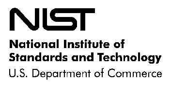
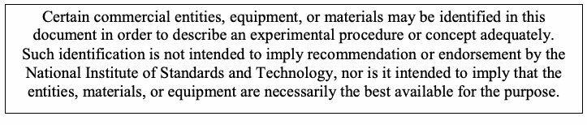
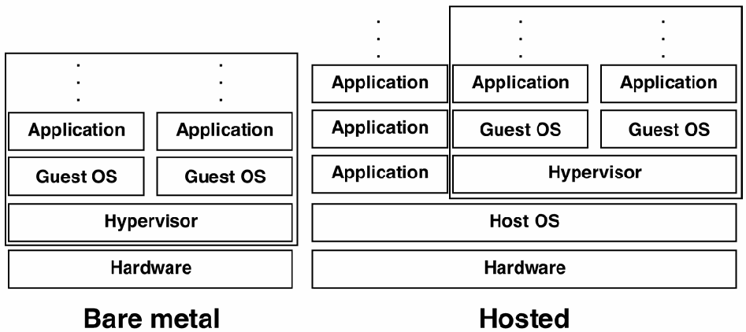

NIST Special Publication · PDF 原文抽出
Guide to Security for Full Virtualization Technologies
完全仮想化技術のセキュリティガイド
NIST SP 800-125（Guide to Security for Full Virtualization Technologies）の英文と日本語訳を段落ごとに並べた閲覧用ページです。サーバおよびデスクトップの完全仮想化技術に伴うセキュリティ上の懸念を説明し、仮想化環境を保護するための推奨事項を示します。 翻訳は非公式です。要件の確認にはNIST の正式版 PDFを参照してください。
PDF から抽出した原文は原本との照合待ちです。

Special Publication 800-125
特別刊行物 800-125
未レビュー訳Guide to Security for Full Virtualization Technologies
完全仮想化技術のセキュリティガイド
未レビュー訳Recommendations of the National Institute of Standards and Technology
国立標準技術研究所の推奨事項
未レビュー訳Karen Scarfone Murugiah Souppaya Paul Hoffman
Karen Scarfone、Murugiah Souppaya、Paul Hoffman
未レビュー訳原本の表画像
Guide to Security for Full Virtualization Technologies
完全仮想化技術のセキュリティガイド
未レビュー訳Recommendations of the National Institute of Standards and Technology
国立標準技術研究所の推奨事項
未レビュー訳Karen Scarfone Murugiah Souppaya Paul Hoffman
Karen Scarfone、Murugiah Souppaya、Paul Hoffman
未レビュー訳C O M P U T E R S E C U R I T Y
コンピューターセキュリティ
未レビュー訳Computer Security Division Information Technology Laboratory National Institute of Standards and Technology Gaithersburg, MD 20899-8930
Computer Security Division Information Technology Laboratory National Institute of Standards and Technology Gaithersburg, MD 20899-8930
未レビュー訳January 2011
2011年1月
未レビュー訳U.S. Department of Commerce
米国商務省
未レビュー訳Gary Locke, Secretary
Gary Locke 長官
未レビュー訳National Institute of Standards and Technology
国立標準技術研究所
未レビュー訳Patrick D. Gallagher, Director
Patrick D. Gallagher 所長
未レビュー訳Reports on Computer Systems Technology
コンピューターシステム技術レポート
未レビュー訳The Information Technology Laboratory (ITL) at the National Institute of Standards and Technology (NIST) promotes the U.S. economy and public welfare by providing technical leadership for the nation’s measurement and standards infrastructure. ITL develops tests, test methods, reference data, proof of concept implementations, and technical analysis to advance the development and productive use of information technology. ITL’s responsibilities include the development of technical, physical, administrative, and management standards and guidelines for the cost-effective security and privacy of sensitive unclassified information in Federal computer systems. This Special Publication 800-series reports on ITL’s research, guidance, and outreach efforts in computer security and its collaborative activities with industry, government, and academic organizations.
国立標準技術研究所 (NIST) の情報技術研究所 (ITL) は、米国の計測および標準インフラストラクチャに技術的リーダーシップを提供することで、米国経済と公共の福祉を促進する。ITL は、情報技術の発展と生産的利用を推進するため、試験、試験方法、参照データ、概念実証の実装、および技術分析を開発する。ITL の責務には、連邦コンピューターシステム内の機密指定されていない機微情報の費用対効果に優れたセキュリティとプライバシーを実現するための技術的、物理的、管理的および運用上の標準とガイドラインの策定が含まれる。この特別刊行物 800 シリーズは、コンピューターセキュリティに関する ITL の研究、指針および普及活動、ならびに産業界、政府機関、学術機関との協力活動を報告する。
未レビュー訳National Institute of Standards and Technology Special Publication 800-125 Natl. Inst. Stand. Technol. Spec. Publ. 800-125, 35 pages (January 2010)
国立標準技術研究所 特別刊行物 800-125 Natl. Inst. Stand. Technol. Spec. Publ. 800-125, 35ページ（2010年1月）
未レビュー訳原本の表画像

Acknowledgments
謝辞
未レビュー訳The authors, Karen Scarfone of G2, Inc., Murugiah Souppaya of the National Institute of Standards and Technology (NIST), and Paul Hoffman of the VPN Consortium, wish to thank their colleagues who reviewed drafts of this document and contributed to its technical content. The authors gratefully acknowledge and appreciate the contributions from individuals and organizations whose comments improved the overall quality of this publication.
著者である G2, Inc. の Karen Scarfone、国立標準技術研究所 (NIST) の Murugiah Souppaya、および VPN Consortium の Paul Hoffman は、本書の草案を査読し、技術的内容に貢献した同僚に謝意を表する。著者は、本刊行物全体の品質を高めたコメントを寄せた個人および組織の貢献に深く感謝する。
未レビュー訳Trademark Information
商標情報
未レビュー訳All names are trademarks or registered trademarks of their respective owners.
すべての名称は、それぞれの所有者の商標または登録商標である。
未レビュー訳Table of Contents
目次
未レビュー訳Executive Summary............................................................................................................ES-1
エグゼクティブサマリー............................................................................................................ES-1
未レビュー訳1. Introduction ................................................................................................................... 1-1
1. 序論 ................................................................................................................... 1-1
未レビュー訳1.1 Authority.................................................................................................................1-1
1.1 権限.................................................................................................................1-1
未レビュー訳1.2 Purpose and Scope................................................................................................1-1
1.2 目的および適用範囲................................................................................................1-1
未レビュー訳1.3 Audience ................................................................................................................1-1
1.3 対象読者 ................................................................................................................1-1
未レビュー訳1.4 Document Structure ...............................................................................................1-1
1.4 文書の構成 ...............................................................................................1-1
未レビュー訳2. Introduction to Full Virtualization................................................................................. 2-1
2. 完全仮想化の概要................................................................................. 2-1
未レビュー訳2.1 Motivations for Full Virtualization ............................................................................2-1
2.1 完全仮想化の動機 ............................................................................2-1
未レビュー訳2.2 Types of Full Virtualization .....................................................................................2-2
2.2 完全仮想化の種類 .....................................................................................2-2
未レビュー訳2.3 Virtualizing Hardware .............................................................................................2-4
2.3 ハードウェアの仮想化 .............................................................................................2-4
未レビュー訳2.3.1 Virtualized Networking................................................................................ 2-4
2.3.1 ネットワークの仮想化................................................................................ 2-4
未レビュー訳2.3.2 Virtualized Storage..................................................................................... 2-5
2.3.2 ストレージの仮想化..................................................................................... 2-5
未レビュー訳2.3.3 Guest OS Images....................................................................................... 2-6
2.3.3 ゲスト OS イメージ....................................................................................... 2-6
未レビュー訳2.4 Full Virtualization Use Cases..................................................................................2-6
2.4 完全仮想化のユースケース..................................................................................2-6
未レビュー訳2.4.1 Server Virtualization ................................................................................... 2-6
2.4.1 サーバー仮想化 ................................................................................... 2-6
未レビュー訳2.4.2 Desktop Virtualization ................................................................................ 2-8
2.4.2 デスクトップ仮想化 ................................................................................ 2-8
未レビュー訳3. Virtualization Security Overview .................................................................................. 3-1
3. 仮想化セキュリティの概要 .................................................................................. 3-1
未レビュー訳3.1 Guest OS Isolation .................................................................................................3-1
3.1 ゲストOSの分離 .................................................................................................3-1
未レビュー訳3.2 Guest OS Monitoring..............................................................................................3-2
3.2 ゲストOSの監視..............................................................................................3-2
未レビュー訳3.3 Image and Snapshot Management.........................................................................3-2
3.3 イメージおよびスナップショットの管理.........................................................3-2
未レビュー訳4. Security Recommendations for Virtualization Components...................................... 4-1
4. 仮想化コンポーネントに関するセキュリティ推奨事項...................................... 4-1
未レビュー訳4.1 Hypervisor Security ................................................................................................4-1
4.1 ハイパーバイザーのセキュリティ ......................................................................4-1
未レビュー訳4.2 Guest OS Security..................................................................................................4-3
4.2 ゲストOSのセキュリティ..................................................................................4-3
未レビュー訳4.3 Virtualized Infrastructure Security...........................................................................4-4
4.3 仮想化インフラストラクチャのセキュリティ...................................................4-4
未レビュー訳4.4 Desktop Virtualization Security...............................................................................4-5
4.4 デスクトップ仮想化のセキュリティ.................................................................4-5
未レビュー訳5. Secure Virtualization Planning and Deployment......................................................... 5-1
5. セキュアな仮想化の計画および導入................................................................. 5-1
未レビュー訳5.1 Initiation..................................................................................................................5-2
5.1 開始..................................................................................................................5-2
未レビュー訳5.2 Planning and Design ..............................................................................................5-2
5.2 計画および設計 ..............................................................................................5-2
未レビュー訳5.3 Implementation.......................................................................................................5-3
5.3 実装.................................................................................................................5-3
未レビュー訳5.4 Operations and Maintenance..................................................................................5-4
5.4 運用および保守...............................................................................................5-4
未レビュー訳5.5 Disposition..............................................................................................................5-5
5.5 廃止.................................................................................................................5-5
未レビュー訳List of Appendices
付録一覧
未レビュー訳Appendix A— Glossary ........................................................................................................A-1
付録A— 用語集 ........................................................................................................A-1
未レビュー訳Appendix B— Acronyms and Abbreviations ......................................................................B-1
付録B— 頭字語および略語 ......................................................................................B-1
未レビュー訳Executive Summary
エグゼクティブ・サマリー
未レビュー訳Virtualization is the simulation of the software and/or hardware upon which other software runs. This simulated environment is called a virtual machine (VM). There are many forms of virtualization, distinguished primarily by computing architecture layer. This publication focuses on the form of virtualization known as full virtualization. In full virtualization, one or more OSs and the applications they contain are run on top of virtual hardware. Each instance of an OS and its applications runs in a separate VM called a guest operating system. The guest OSs on a host are managed by the hypervisor. which controls the flow of instructions between the guest OSs and the physical hardware, such as CPU, disk storage, memory, and network interface cards. The hypervisor can partition the system’s resources and isolate the guest OSs so that each has access to only its own resources, as well as possible access to shared resources such as files on the host OS. Also, each guest OS can be completely encapsulated, making it portable. Some hypervisors run on top of another OS, which is known as the host operating system.
仮想化とは、他のソフトウェアが実行される基盤となるソフトウェアおよび／またはハードウェアをシミュレートすることである。このシミュレートされた環境は仮想マシン（VM）と呼ばれる。仮想化には多くの形態があり、主としてコンピューティング・アーキテクチャの層によって区別される。本書は、完全仮想化として知られる形態に焦点を当てる。完全仮想化では、1つ以上のOSとそれらに含まれるアプリケーションが仮想ハードウェア上で実行される。OSとそのアプリケーションの各インスタンスは、ゲストオペレーティングシステムと呼ばれる別個のVMで実行される。ホスト上のゲストOSはハイパーバイザーによって管理される。ハイパーバイザーは、ゲストOSとCPU、ディスクストレージ、メモリ、ネットワークインターフェースカードなどの物理ハードウェアとの間の命令の流れを制御する。ハイパーバイザーはシステムリソースを分割し、各ゲストOSが自身のリソースだけにアクセスできるように分離できる(can)。また、ホストOS上のファイルなどの共有リソースへのアクセスを可能にできる(can)。さらに、各ゲストOSは完全にカプセル化でき、可搬性を持たせられる。一部のハイパーバイザーは、ホストオペレーティングシステムとして知られる別のOS上で実行される。
未レビュー訳The recent increase in the use of full virtualization products and services has been driven by many benefits. One of the most common reasons for adopting full virtualization is operational efficiency: organizations can use their existing hardware (and new hardware purchases) more efficiently by putting more load on each computer. In general, servers using full virtualization can use more of the computer’s processing and memory resources than servers running a single OS instance and a single set of services. A second common use of full virtualization is for desktop virtualization, where a single PC is running more than one OS instance. Desktop virtualization can provide support for applications that only run on a particular OS. It allows changes to be made to an OS and subsequently revert to the original if needed, such as to eliminate changes that negatively affect security. Desktop virtualization also supports better control of OSs to ensure that they meet the organization’s security requirements.
完全仮想化製品およびサービスの利用が近年増加した背景には、多くの利点がある。完全仮想化を採用する最も一般的な理由の1つは運用効率であり、組織は既存のハードウェア（および新たに購入するハードウェア）により多くの負荷をかけることで、より効率的に利用できる(can)。一般に、完全仮想化を使用するサーバーは、単一のOSインスタンスと単一のサービス群を実行するサーバーよりも、コンピューターの処理リソースとメモリリソースをより多く利用できる(can)。完全仮想化のもう1つの一般的な用途はデスクトップ仮想化であり、1台のPC上で複数のOSインスタンスを実行する。デスクトップ仮想化は、特定のOSでのみ動作するアプリケーションをサポートできる(can)。必要に応じて、OSに変更を加えた後、セキュリティに悪影響を与える変更を取り除く場合などに、元の状態へ戻すこともできる。デスクトップ仮想化は、OSが組織のセキュリティ要件を確実に満たすよう、OSをより適切に制御することも支援する。
未レビュー訳Full virtualization has some negative security implications. Virtualization adds layers of technology, which can increase the security management burden by necessitating additional security controls. Also, combining many systems onto a single physical computer can cause a larger impact if a security compromise occurs. Further, some virtualization systems make it easy to share information between the systems; this convenience can turn out to be an attack vector if it is not carefully controlled. In some cases, virtualized environments are quite dynamic, which makes creating and maintaining the necessary security boundaries more complex.
完全仮想化には、セキュリティ上の好ましくない影響もある。仮想化は技術層を追加するため、追加のセキュリティ管理策が必要となり、セキュリティ管理の負担を増大させることがある(can)。また、多数のシステムを1台の物理コンピューターに統合すると、セキュリティ侵害が発生した場合の影響がより大きくなり得る(can)。さらに、一部の仮想化システムではシステム間で情報を容易に共有でき、この利便性は慎重に管理されない場合、攻撃経路となり得る(can)。仮想化環境は非常に動的な場合があり、その場合、必要なセキュリティ境界の作成と維持がより複雑になる。
未レビュー訳This publication discusses the security concerns associated with full virtualization technologies for server and desktop virtualization, and provides recommendations for addressing these concerns. Most existing recommended security practices remain applicable in virtual environments. The practices described in this document build on and assume the implementation of practices described in other NIST publications.
本書は、サーバーおよびデスクトップ仮想化向けの完全仮想化技術に関連するセキュリティ上の懸念を説明し、これらに対処するための推奨事項を示す。既存の推奨セキュリティ実践の大半は、仮想環境でも引き続き適用される。本書で説明する実践は、他のNIST刊行物に記載された実践を基礎とし、それらが実施されていることを前提とする。
未レビュー訳To improve the security of server and desktop full virtualization technologies, organizations should implement the following recommendations:
サーバーおよびデスクトップの完全仮想化技術のセキュリティを向上させるため、組織は以下の推奨事項を実施すべきである(should)：
未レビュー訳Secure all elements of a full virtualization solution and maintain their security.
完全仮想化ソリューションのすべての要素を保護し、そのセキュリティを維持する。
未レビュー訳The security of a full virtualization solution is heavily dependent on the individual security of each of its components, from the hypervisor and host OS (if applicable) to guest OSs, applications, and storage. Organizations should secure all of these elements and maintain their security based on sound security practices, such as keeping software up-to-date with security patches, using secure configuration baselines, and using host-based firewalls, antivirus software, or other appropriate mechanisms to detect and stop attacks. In general, organizations should have the same security controls in place for virtualized operating systems as they have for the same operating systems running directly on hardware. The same is true for applications running on guest OSs: if the organization has a security policy for an application, it should apply the same regardless of whether the application is running on an OS within a hypervisor or on an OS running on hardware.
完全仮想化ソリューションのセキュリティは、ハイパーバイザーやホストOS（該当する場合）からゲストOS、アプリケーション、ストレージに至るまで、各コンポーネント個々のセキュリティに大きく依存する。組織は、セキュリティパッチによってソフトウェアを最新の状態に保つこと、セキュアな構成ベースラインを使用すること、ホストベースのファイアウォール、ウイルス対策ソフトウェア、または攻撃を検知して阻止するその他の適切なメカニズムを使用することなど、健全なセキュリティ実践に基づいて、これらすべての要素を保護し、そのセキュリティを維持すべきである(should)。一般に、組織は、仮想化されたオペレーティングシステムに対して、同じオペレーティングシステムがハードウェア上で直接実行される場合と同じセキュリティ管理策を講じるべきである(should)。ゲストOS上で実行されるアプリケーションについても同様である。組織があるアプリケーションにセキュリティポリシーを定めている場合、そのアプリケーションがハイパーバイザー内のOS上で実行されるか、ハードウェア上で実行されるOS上で実行されるかにかかわらず、同じポリシーを適用すべきである(should)。
未レビュー訳Restrict and protect administrator access to the virtualization solution.
仮想化ソリューションへの管理者アクセスを制限し、保護する。
未レビュー訳The security of the entire virtual infrastructure relies on the security of the virtualization management system that controls the hypervisor and allows the operator to start guest OSs, create new guest OS images, and perform other administrative actions. Because of the security implications of these actions, access to the virtualization management system should be restricted to authorized administrators only. Some virtualization products offer multiple ways to manage hypervisors, so organizations should secure each management interface, whether locally or remotely accessible. For remote administration, the confidentiality of communications should be protected, such as through use of FIPS-approved cryptographic algorithms and modules.
仮想インフラストラクチャ全体のセキュリティは、ハイパーバイザーを制御し、オペレーターがゲストOSを起動し、新しいゲストOSイメージを作成し、その他の管理操作を実行できるようにする仮想化管理システムのセキュリティに依存する。これらの操作がセキュリティに及ぼす影響を踏まえ、仮想化管理システムへのアクセスは、許可された管理者のみに制限すべきである(should)。一部の仮想化製品ではハイパーバイザーを管理する複数の方法が提供されているため、組織は、ローカルまたはリモートからアクセス可能なものを問わず、各管理インターフェースを保護すべきである(should)。リモート管理では、FIPS承認済みの暗号アルゴリズムおよびモジュールの使用などにより、通信の機密性を保護すべきである(should)。
未レビュー訳Ensure that the hypervisor is properly secured.
ハイパーバイザーが適切に保護されていることを確保する。
未レビュー訳Securing a hypervisor involves actions that are standard for any type of software, such as installing updates as they become available. Other recommended actions that are specific to hypervisors include disabling unused virtual hardware; disabling unneeded hypervisor services such as clipboard- or file-sharing; and considering using the hypervisor’s capabilities to monitor the security of each guest OS running within it, as well as the security of activity occurring between guest OSs. The hypervisor itself also needs to be carefully monitored for signs of compromise. It is also important to provide physical access controls for the hardware on which the hypervisor runs. For example, hosted hypervisors are typically controlled by management software that can be used by anyone with access to the keyboard and mouse. Even bare metal hypervisors require physical security: someone who can reboot the host computer that the hypervisor is running on might be able to alter some of the security settings for the hypervisor.
ハイパーバイザーの保護には、更新が利用可能になった際のインストールなど、あらゆる種類のソフトウェアに共通する措置が含まれる。ハイパーバイザー固有のその他の推奨措置には、未使用の仮想ハードウェアを無効にすること、クリップボード共有やファイル共有など不要なハイパーバイザーサービスを無効にすること、ハイパーバイザー内で稼働する各ゲストOSのセキュリティと、ゲストOS間で発生する活動のセキュリティを監視するために、ハイパーバイザーの機能を利用できる(can)か検討することが含まれる。ハイパーバイザー自体も、侵害の兆候がないか注意深く監視する必要がある。また、ハイパーバイザーが稼働するハードウェアへの物理アクセス制御を設けることも重要である。例えば、ホスト型ハイパーバイザーは通常、キーボードとマウスにアクセスできる誰もが使用できる(can)管理ソフトウェアによって制御される。ベアメタル型ハイパーバイザーにも物理的セキュリティが必要である。ハイパーバイザーが稼働するホストコンピューターを再起動できる者は、ハイパーバイザーのセキュリティ設定の一部を変更できる可能性がある(might)。
未レビュー訳Carefully plan the security for a full virtualization solution before installing, configuring, and deploying it.
完全仮想化ソリューションのセキュリティは、インストール、構成、導入の前に慎重に計画する。
未レビュー訳Planning helps ensure that the virtual environment is as secure as possible and in compliance with all relevant organizational policies. Security should be considered from the initial planning stage at the beginning of the systems development life cycle to maximize security and minimize costs. It is much more difficult and expensive to address security after deployment and implementation.
計画により、仮想環境のセキュリティを可能な限り高め、関連するすべての組織ポリシーへの準拠を確保しやすくなる。セキュリティは、セキュリティを最大化しコストを最小化するため、システム開発ライフサイクルの初期に当たる計画段階から考慮すべきである(should)。導入および実装後にセキュリティへ対処するのは、はるかに困難で費用もかかる。
未レビュー訳1. Introduction
1. はじめに
未レビュー訳1.1 Authority
1.1 権限
未レビュー訳The National Institute of Standards and Technology (NIST) developed this document in furtherance of its statutory responsibilities under the Federal Information Security Management Act (FISMA) of 2002, Public Law 107-347.
米国国立標準技術研究所（NIST）は、2002年連邦情報セキュリティ管理法（FISMA）、公法107-347に基づく法定責任を遂行するため、本書を作成した。
未レビュー訳NIST is responsible for developing standards and guidelines, including minimum requirements, for providing adequate information security for all agency operations and assets; but such standards and guidelines shall not apply to national security systems. This guideline is consistent with the requirements of the Office of Management and Budget (OMB) Circular A-130, Section 8b(3), “Securing Agency Information Systems,” as analyzed in A-130, Appendix IV: Analysis of Key Sections. Supplemental information is provided in A-130, Appendix III.
NISTは、すべての機関の業務および資産に対して適切な情報セキュリティを提供するための最低要件を含む、規格およびガイドラインを策定する責任を負う。ただし、そのような規格およびガイドラインは国家安全保障システムには適用してはならない(shall)。本ガイドラインは、行政管理予算局（OMB）通達A-130第8b(3)節「機関情報システムの保護」の要件に整合しており、A-130付録IV「主要節の分析」で分析されている。補足情報はA-130付録IIIに記載されている。
未レビュー訳This guideline has been prepared for use by Federal agencies. It may be used by nongovernmental organizations on a voluntary basis and is not subject to copyright, though attribution is desired.
本ガイドラインは連邦機関による使用を目的として作成された。非政府組織も任意で使用してよい(may)。本ガイドラインは著作権の対象ではないが、出典の明記が望まれる。
未レビュー訳Nothing in this document should be taken to contradict standards and guidelines made mandatory and binding on Federal agencies by the Secretary of Commerce under statutory authority, nor should these guidelines be interpreted as altering or superseding the existing authorities of the Secretary of Commerce, Director of the OMB, or any other Federal official.
本書のいかなる記述も、法的権限に基づき商務長官が連邦機関に義務付け、拘束力を持たせた規格およびガイドラインに反すると解釈してはならない(should)。また、本ガイドラインを、商務長官、OMB長官、またはその他の連邦政府職員が有する既存の権限を変更または優先して置き換えるものと解釈してはならない(should)。
未レビュー訳1.2 Purpose and Scope
1.2 目的および適用範囲
未レビュー訳The purpose of the guide is to discuss the security concerns associated with full virtualization technologies for server and desktop virtualization, and to provide recommendations for addressing these concerns. All forms of virtualization other than server and desktop full virtualization are outside the scope of this document.
本ガイドの目的は、サーバーおよびデスクトップ仮想化向けの完全仮想化技術に関連するセキュリティ上の懸念を説明し、これらに対処するための推奨事項を示すことである。サーバーおよびデスクトップの完全仮想化以外のすべての形態の仮想化は、本書の適用範囲外である。
未レビュー訳Most existing recommended security practices remain applicable in virtual environments. The practices described in this document build on and assume the implementation of practices described in other NIST publications.
既存の推奨セキュリティ実践の大半は、仮想環境でも引き続き適用される。本書に記載された実践は、他のNIST刊行物に記載された実践を基礎とし、それらが実施されていることを前提とする。
未レビュー訳1.3 Audience
1.3 対象読者
未レビュー訳The intended audience for this document is system and security administrators, security program managers, information system security officers, and others who have responsibilities for or are otherwise interested in the security of server or desktop full virtualization technologies.
本書の対象読者は、システム管理者およびセキュリティ管理者、セキュリティプログラムマネージャー、情報システムセキュリティ担当者、ならびにサーバーまたはデスクトップの完全仮想化技術のセキュリティに責任を負うか、その他の形で関心を持つ人々である。
未レビュー訳This document assumes that readers have some operating system, networking, and security expertise. Because of the constantly changing nature of full virtualization technologies, readers are encouraged to take advantage of other resources (including those listed in this document) for more current and detailed information.
本書は、読者がオペレーティングシステム、ネットワーク、およびセキュリティに関する一定の専門知識を有することを前提としている。完全仮想化技術は絶えず変化するため、読者には、本書に記載されたものを含む他の情報源を活用し、より新しく詳細な情報を得ることを推奨する。
未レビュー訳1.4 Document Structure
1.4 文書の構成
未レビュー訳The remainder of this document is organized into the following major sections:
本書の残りの部分は、以下の主要な節で構成される。
未レビュー訳 Section 2 presents an introduction to full virtualization technologies and describes server and desktop full virtualization.
第2節では、完全仮想化技術を紹介し、サーバーおよびデスクトップの完全仮想化について説明する。
未レビュー訳 Section 3 discusses the security characteristics of full virtualization technologies.
第3節では、完全仮想化技術のセキュリティ特性を論じる。
未レビュー訳 Section 4 provides security recommendations for virtualization components.
第4節では、仮想化コンポーネントに関するセキュリティ推奨事項を示す。
未レビュー訳 Section 5 highlights security considerations of particular interest throughout the lifecycle of full virtualization solutions.
第5節では、完全仮想化ソリューションのライフサイクル全体を通じて特に重要なセキュリティ上の考慮事項を取り上げる。
未レビュー訳The document also contains appendices with supporting material:
本書には、参考資料を含む付録もある。
未レビュー訳 Appendix A defines terms used in this document.
付録Aでは、本書で使用する用語を定義する。
未レビュー訳 Appendix B contains a list of acronyms and abbreviations used in this document.
付録Bには、本書で使用する頭字語および略語の一覧を掲載する。
未レビュー訳2. Introduction to Full Virtualization
2. 完全仮想化の概要
未レビュー訳Virtualization is the simulation of the software and/or hardware upon which other software runs. This simulated environment is called a virtual machine (VM). There are many forms of virtualization, distinguished primarily by computing architecture layer. For example, application virtualization provides a virtual implementation of the application programming interface (API) that a running application expects to use, allowing applications developed for one platform to run on another without modifying the application itself. The Java Virtual Machine (JVM) is an example of application virtualization; it acts as an intermediary between the Java application code and the operating system (OS). Another form of virtualization, known as operating system virtualization, provides a virtual implementation of the OS interface that can be used to run applications written for the same OS as the host, with each application in a separate VM container.
仮想化とは、他のソフトウェアが実行される基盤となるソフトウェアおよび／またはハードウェアをシミュレートすることである。このシミュレートされた環境は仮想マシン（VM）と呼ばれる。仮想化には多くの形態があり、主としてコンピューティング・アーキテクチャの層によって区別される。例えば、アプリケーション仮想化は、実行中のアプリケーションが使用すると想定するアプリケーション・プログラミング・インターフェース（API）の仮想実装を提供し、アプリケーション自体を変更せずに、あるプラットフォーム向けに開発されたアプリケーションを別のプラットフォーム上で実行できるようにする。Java仮想マシン（JVM）はアプリケーション仮想化の一例であり、Javaアプリケーションのコードとオペレーティングシステム（OS）の間を仲介する。オペレーティングシステム仮想化として知られる別の形態の仮想化は、ホストと同じOS向けに作成されたアプリケーションを実行するために使用できる(can)OSインターフェースの仮想実装を提供し、各アプリケーションを別々のVMコンテナーで実行する。
未レビュー訳Application virtualization and operating system virtualization are outside the scope of this publication. This publication focuses on the form of virtualization known as full virtualization. In full virtualization, one or more OSs and the applications they contain are run on top of virtual hardware. Each instance of an OS and its applications runs in a separate VM called a guest operating system. The guest OSs on a host are managed by the hypervisor, also called the virtual machine monitor (VMM), which controls the flow of instructions between the guest OSs and the physical hardware, such as CPU, disk storage, memory, and network interface cards. The hypervisor can partition the system’s resources and isolate the guest OSs so that each has access to only its own resources, as well as possible access to shared resources such as files on the host OS. Also, each guest OS can be completely encapsulated, making it portable. Some hypervisors run on top of another OS, which is known as the host operating system.
アプリケーション仮想化およびオペレーティングシステム仮想化は、本書の適用範囲外である。本書は、完全仮想化として知られる形態に焦点を当てる。完全仮想化では、1つ以上のOSとそれらに含まれるアプリケーションが仮想ハードウェア上で実行される。OSとそのアプリケーションの各インスタンスは、ゲストオペレーティングシステムと呼ばれる別個のVMで実行される。ホスト上のゲストOSは、仮想マシンモニター（VMM）とも呼ばれるハイパーバイザーによって管理される。ハイパーバイザーは、ゲストOSとCPU、ディスクストレージ、メモリ、ネットワークインターフェースカードなどの物理ハードウェアとの間の命令の流れを制御する。ハイパーバイザーはシステムのリソースを分割し、各ゲストOSが自身のリソースだけにアクセスできるよう分離できる(can)。また、ホストOS上のファイルなどの共有リソースへのアクセスを可能にする場合もある。さらに、各ゲストOSは完全にカプセル化でき、可搬性を持たせられる(can)。一部のハイパーバイザーは、ホストオペレーティングシステムとして知られる別のOS上で実行される。
未レビュー訳In full virtualization the hypervisor provides most of the same hardware interfaces as those provided by the hardware’s physical platform. This means that the OSs and applications running within full virtualization do not need to be modified for virtualization to work if the OSs and applications are compatible with the underlying hardware. An interesting twist on full virtualization is paravirtualization, which is a method for the hypervisor to offer interfaces to the guest OS that the guest OS can use instead of the normal hardware interfaces. If a guest OS can use paravirtualized interfaces, they offer significantly faster access for resources such as hard drives and networks. Different types of paravirtualization are offered by different hypervisor systems.
完全仮想化では、ハイパーバイザーは、ハードウェアの物理プラットフォームが提供するものとほぼ同じハードウェアインターフェースの大半を提供する。このため、OSおよびアプリケーションが基盤となるハードウェアと互換性を持つ場合、完全仮想化内で実行するためにOSやアプリケーションを変更する必要はない(need)。完全仮想化の興味深い変形として準仮想化がある。これは、通常のハードウェアインターフェースの代わりにゲストOSが使用できる(can)インターフェースを、ハイパーバイザーがゲストOSに提供する方式である。ゲストOSが準仮想化インターフェースを使用できる(can)場合、ハードドライブやネットワークなどのリソースに大幅に高速にアクセスできる。ハイパーバイザーシステムごとに、異なる種類の準仮想化が提供される。
未レビュー訳This section provides an overview of full virtualization as a foundation for the rest of the publication. It also explains the two common use cases for full virtualization: server virtualization and desktop virtualization.
本節では、本書の残りの部分の基礎として、完全仮想化の概要を示す。また、完全仮想化の一般的な2つのユースケース、すなわちサーバー仮想化とデスクトップ仮想化についても説明する。
未レビュー訳2.1 Motivations for Full Virtualization
2.1 完全仮想化の動機
未レビュー訳The recent increase in the use of full virtualization products and services has been driven by many benefits. One of the most common reasons for adopting full virtualization is operational efficiency: organizations can use their existing hardware (and new hardware purchases) more efficiently by putting more load on each computer. In general, servers using full virtualization can use more of the computer’s processing and memory resources than servers running a single OS instance and a single set of services. Recent advances in CPU architectures have made full virtualization faster than it was just a few years ago, and similar advances are expected to continue to be made both by CPU vendors and virtualization software vendors. Also, CPU architecture changes have made full virtualization more secure by strengthening hypervisor restrictions on resources.
完全仮想化製品およびサービスの利用が近年増加した背景には、多くの利点がある。完全仮想化を採用する最も一般的な理由の1つは運用効率であり、組織は各コンピューターにより多くの負荷をかけることで、既存のハードウェア（および新たに購入するハードウェア）をより効率的に利用できる(can)。一般に、完全仮想化を使用するサーバーは、単一のOSインスタンスと単一のサービス群を実行するサーバーよりも、コンピューターの処理リソースとメモリリソースをより多く利用できる(can)。近年のCPUアーキテクチャの進歩により、完全仮想化は数年前より高速になっており、CPUベンダーと仮想化ソフトウェアベンダーの双方による同様の進歩が今後も続くと予想される。また、CPUアーキテクチャの変更により、リソースに対するハイパーバイザーの制約が強化され、完全仮想化のセキュリティも向上した。
未レビュー訳A second common use of full virtualization is for desktop virtualization, where a single PC is running more than one OS instance. There are several reasons for deploying desktop virtualization. It can provide support for applications that only run on a particular OS. It allows changes to be made to an OS and subsequently revert to the original if needed, such as to eliminate changes that negatively affect security. Desktop virtualization also supports better control of OSs to ensure that they meet the organization’s security requirements. This control can be asserted by creating a high-assurance platform that constantly updates the guest OS to have the exact versions of the programs that it is authorized to have, and no other programs.
完全仮想化のもう1つの一般的な用途はデスクトップ仮想化であり、1台のPC上で複数のOSインスタンスを実行する。デスクトップ仮想化を導入する理由はいくつかある。特定のOSでのみ動作するアプリケーションをサポートできる(can)。OSに変更を加えた後、必要に応じて元の状態へ戻すことができ、例えばセキュリティに悪影響を与える変更を取り除ける。デスクトップ仮想化は、OSが組織のセキュリティ要件を確実に満たすよう、OSをより適切に制御することも支援する。この制御は、ゲストOSを常時更新し、認可されたプログラムの正確なバージョンだけを含み、それ以外のプログラムを含まない高保証プラットフォームを作成することで実現できる(can)。
未レビュー訳A more recent use of desktop virtualization is to enable the use of applications that only run on an older version of an OS when the user’s desktop is running a newer version. In such a situation, desktop virtualization is useful for continuity of applications as the OSs advance faster than the applications that run on them. As more applications become web-based, desktop virtualization can become even more important: a web application that only runs on an older version of a particular browser can be run in a virtualized system that has the older version of that browser, while the user’s main environment is running the newer (usually more secure) version of the browser. For use cases such as this, many organizations use application virtualization instead of desktop virtualization.
デスクトップ仮想化の比較的新しい用途は、ユーザーのデスクトップで新しいバージョンのOSが実行されているときに、古いバージョンのOSでしか動作しないアプリケーションを使用できる(can)ようにすることである。このような状況では、OSの進化がその上で動作するアプリケーションより速いため、デスクトップ仮想化はアプリケーションの継続利用に役立つ。Webベースのアプリケーションが増えるにつれ、デスクトップ仮想化はさらに重要になり得る(can)。特定のブラウザーの古いバージョンでしか動作しないWebアプリケーションを、その古いバージョンのブラウザーを備えた仮想化システム内で実行する一方、ユーザーの主環境ではブラウザーの新しい（通常はより安全な）バージョンを実行できる。こうしたユースケースでは、多くの組織がデスクトップ仮想化の代わりにアプリケーション仮想化を使用する。
未レビュー訳Full virtualization has some negative security implications. Virtualization adds layers of technology, which can increase the security management burden by necessitating additional security controls. Also, combining many systems onto a single physical computer can cause a larger impact if a security compromise occurs. Further, some virtualization systems make it easy to share information between the systems; this convenience can turn out to be an attack vector if it is not carefully controlled. In some cases, virtualized environments are quite dynamic, which makes creating and maintaining the necessary security boundaries more complex.
完全仮想化には、セキュリティ上の好ましくない影響もある。仮想化は技術層を追加するため、追加のセキュリティ管理策が必要となり、セキュリティ管理の負担を増大させることがある(can)。また、多数のシステムを1台の物理コンピューターに統合すると、セキュリティ侵害が発生した場合の影響がより大きくなり得る(can)。さらに、一部の仮想化システムではシステム間で情報を容易に共有でき、この利便性は慎重に管理されない場合、攻撃経路となり得る(can)。仮想化環境は非常に動的な場合があり、その場合、必要なセキュリティ境界の作成と維持がより複雑になる。
未レビュー訳2.2 Types of Full Virtualization
2.2 完全仮想化の種類
未レビュー訳There are two forms of full virtualization. Figure 2-1 compares their high-level architectures. In bare metal virtualization, also known as native virtualization, the hypervisor runs directly on the underlying hardware, without a host OS; the hypervisor can even be built into the computer’s firmware. In the other form of full virtualization, known as hosted virtualization, the hypervisor runs on top of the host OS; the host OS can be almost any common operating system such as Windows, Linux, or MacOS. Hosted virtualization architectures usually also have an additional layer of software (the virtualization application) running in the guest OS that provides utilities to control the virtualization while in the guest OS, such as the ability to share files with the host OS. Hosted virtualization architectures also allow users to run applications such as web browsers and email clients alongside the hosted virtualization application, unlike bare metal architectures, which can only run applications within virtualized systems.
完全仮想化には2つの形態がある。図2-1は、それらの高水準アーキテクチャを比較する。ベアメタル仮想化（ネイティブ仮想化とも呼ばれる）では、ホストOSを介さず、ハイパーバイザーが基盤となるハードウェア上で直接実行される。ハイパーバイザーがコンピューターのファームウェアに組み込まれることさえある(can)。もう1つの形態であるホスト型仮想化では、ハイパーバイザーがホストOS上で実行される。ホストOSには、Windows、Linux、MacOSなど、一般的なほぼあらゆるオペレーティングシステムを使用できる(can)。ホスト型仮想化アーキテクチャには通常、ゲストOS内で実行される追加のソフトウェア層（仮想化アプリケーション）もあり、ゲストOS内から仮想化を制御するユーティリティを提供する。例えば、ホストOSとのファイル共有機能がある。ホスト型仮想化アーキテクチャでは、ベアメタル型アーキテクチャと異なり、仮想化アプリケーションと並行してWebブラウザーや電子メールクライアントなどのアプリケーションを実行することもできる(can)。ベアメタル型アーキテクチャでは、アプリケーションは仮想化システム内でのみ実行できる。
未レビュー訳
Figure 2-1. Full Virtualization Architectures
図2-1. 完全仮想化アーキテクチャ
未レビュー訳Servers are most often virtualized on computers using bare metal virtualization. Desktops are most often virtualized on computers with hosted virtualization. In both bare metal and hosted virtualization, each guest OS appears to have its own hardware, like a regular computer. This includes:
サーバーは通常、ベアメタル仮想化を使用するコンピューター上で仮想化される。デスクトップは通常、ホスト型仮想化を使用するコンピューター上で仮想化される。ベアメタル仮想化でもホスト型仮想化でも、各ゲストOSには通常のコンピューターと同様に独自のハードウェアがあるように見える。これには以下が含まれる。
未レビュー訳 CPU
CPU
未レビュー訳 Memory
メモリ
未レビュー訳 Storage (hard disk, and possibly floppy and CD-ROM drives)
ストレージ（ハードディスク、および場合によってはフロッピーディスクドライブとCD-ROMドライブ）
未レビュー訳 Storage controllers
ストレージコントローラー
未レビュー訳 Ethernet controllers
イーサネットコントローラー
未レビュー訳 Display and sound devices
ディスプレイおよびサウンドデバイス
未レビュー訳 Keyboard and mouse
キーボードおよびマウス
未レビュー訳Many virtualization environments offer additional virtual hardware, such as USB controllers, parallel ports for printing, and serial ports. Some hypervisors allow paravirtualization of some hardware interfaces, most commonly the storage controller and Ethernet controllers. Some hypervisors also provide direct memory access (DMA) to high-speed storage controllers and Ethernet controllers, if such features are supported in the hardware CPU on which the hypervisor is running. DMA access from guest OSs can significantly increase the speed of disk and network access, although this type of acceleration prevents some useful virtualization features such as snapshots and moving guest OSs while they are running.
多くの仮想化環境では、USBコントローラー、印刷用のパラレルポート、シリアルポートなどの追加の仮想ハードウェアが提供される。一部のハイパーバイザーは、いくつかのハードウェアインターフェース、特にストレージコントローラーおよびイーサネットコントローラーを準仮想化できる。一部のハイパーバイザーは、ハイパーバイザーが実行されているハードウェアCPUがその機能に対応している場合、高速ストレージコントローラーおよびイーサネットコントローラーへのダイレクト・メモリー・アクセス（DMA）も提供する。ゲストOSからのDMAアクセスは、ディスクおよびネットワークへのアクセス速度を大幅に向上させることがある(can)が、この種の高速化により、スナップショットや実行中のゲストOSの移動など、一部の有用な仮想化機能が利用できなくなる。
未レビュー訳Deciding between bare metal and hosted virtualization—whether or not to have a host OS—is an important operational and security decision. Adding a hypervisor on top of a host OS adds more complexity and more vulnerabilities to the host. However, a hypervisor is much simpler and smaller than a host OS, so it provides a smaller target. Choosing bare metal virtualization by replacing a host OS with a hypervisor may improve security, depending on how well-secured the hypervisor is, while adding a hypervisor on top of a host OS tends to increase risk. Organizations should balance security and functionality when deciding whether or not a host OS should be used under a server or desktop virtualization solution. They should also take into account that bare metal hypervisors run on a much more limited range of hardware than hosted hypervisors; for example, bare metal hypervisors often work on only a limited number of Ethernet controllers and graphics cards.
ベアメタル仮想化とホスト型仮想化のどちらを選ぶか、すなわちホストOSを使用するかどうかは、運用上およびセキュリティ上の重要な判断である。ホストOS上にハイパーバイザーを追加すると、ホストの複雑さと脆弱性が増す。しかし、ハイパーバイザーはホストOSよりはるかに単純で小さいため、攻撃対象領域は小さくなる。ホストOSをハイパーバイザーに置き換えるベアメタル仮想化を選択すれば、ハイパーバイザーがどれだけ適切に保護されているかに応じて、セキュリティが向上する可能性がある(may)。一方、ホストOS上にハイパーバイザーを追加すると、リスクが増す傾向にある。組織は、サーバーまたはデスクトップ仮想化ソリューションの下でホストOSを使用すべきかどうか(should)を決定する際、セキュリティと機能性のバランスを取るべきである(should)。また、ベアメタル型ハイパーバイザーが動作するハードウェアの範囲はホスト型よりかなり限られている点も考慮すべきである(should)。例えば、ベアメタル型ハイパーバイザーは、限られた種類のイーサネットコントローラーおよびグラフィックスカードでしか動作しないことが多い。
未レビュー訳Hardware emulation (sometimes called hardware translation) is a type of hosted virtualization. The primary difference is that in hardware emulation, the hypervisor provides different hardware interfaces from those provided by the physical hardware. Because the hypervisor in hardware emulation can simulate all of the hardware required by the guest OS, it can run unmodified OSs designed for platforms different from the host platform. For example, early versions of VirtualPC allowed users to run the Microsoft Windows OS on the PowerPC processor supported by the Apple MacOS platform. Similarly, Apple supplies the Rosetta software with its Intel Mac OS X platform, allowing programs designed for the PowerPC version of Mac OS X to run on the Intel Mac platform.
ハードウェアエミュレーション（ハードウェア変換とも呼ばれる）は、ホスト型仮想化の一種である。主な違いは、ハードウェアエミュレーションでは、ハイパーバイザーが物理ハードウェアとは異なるハードウェアインターフェースを提供する点にある。ハードウェアエミュレーションのハイパーバイザーはゲストOSに必要なすべてのハードウェアをシミュレートできるため、ホストプラットフォームとは異なるプラットフォーム向けに設計された未変更のOSを実行できる(can)。例えば、VirtualPCの初期バージョンでは、Apple MacOSプラットフォームがサポートするPowerPCプロセッサ上でMicrosoft Windows OSを実行できた(can)。同様に、AppleはIntel Mac OS Xプラットフォーム向けにRosettaソフトウェアを提供し、PowerPC版Mac OS X向けに設計されたプログラムをIntel Macプラットフォーム上で実行できるようにしている。
未レビュー訳2.3 Virtualizing Hardware
2.3 ハードウェアの仮想化
未レビュー訳For full virtualization to be effective, the virtualized hardware presented to the guest OS must resemble physical hardware extremely closely. In addition, virtualization systems must offer additional features for the virtualized hardware to help it integrate well with the physical hardware in an organization’s network. This section discusses virtualized networking and storage, as well as how a guest OS is encapsulated.
完全仮想化を有効に機能させるには、ゲストOSに提示される仮想化ハードウェアが物理ハードウェアに極めてよく似ていなければならない(must)。さらに、仮想化システムは、組織のネットワーク内で物理ハードウェアとうまく統合できるよう、仮想化ハードウェアに追加機能を提供しなければならない(must)。本節では、仮想化ネットワークおよびストレージと、ゲストOSのカプセル化について説明する。
未レビュー訳2.3.1 Virtualized Networking
2.3.1 仮想化ネットワーク
未レビュー訳Full virtualization hypervisors can provide networking capabilities, allowing the individual guest OSs to communicate with one another while simultaneously limiting access to the external physical network. The network interfaces that the guest OSs see may be virtual, physical, or both. Typical hypervisors offer three primary forms of network access:
完全仮想化ハイパーバイザーは、個々のゲストOSが相互に通信できる(can)ようにしつつ、外部の物理ネットワークへのアクセスを制限するネットワーク機能を提供できる。ゲストOSから見えるネットワークインターフェースは、仮想、物理、またはその両方の場合がある(may)。一般的なハイパーバイザーは、主に次の3種類のネットワークアクセスを提供する。
未レビュー訳 Network Bridging. The guest OS is given direct access to the host’s network interface cards (NIC) independent of the host OS.
ネットワークブリッジ。ゲストOSには、ホストOSとは独立して、ホストのネットワークインターフェースカード（NIC）への直接アクセスが与えられる。
未レビュー訳 Network Address Translation (NAT). The guest OS is given a virtual NIC that is connected to a simulated NAT inside the hypervisor. As in a traditional NAT, all outbound network traffic is sent through the virtual NIC to the host OS for forwarding, usually to a physical NIC on the host system.
ネットワークアドレス変換（NAT）。ゲストOSには、ハイパーバイザー内のシミュレートされたNATに接続する仮想NICが与えられる。従来のNATと同様に、すべての送信ネットワークトラフィックは仮想NICを通じてホストOSに送られ、通常はホストシステム上の物理NICへ転送される。
未レビュー訳 Host Only Networking. The guest OS is given a virtual NIC that does not directly route to a physical NIC. In this scenario, guest OSs can be configured to communicate with one another and, potentially, with the host OS.
ホストオンリーネットワーキング。ゲストOSには、物理NICへ直接ルーティングしない仮想NICが与えられる。この構成では、ゲストOS同士、および場合によってはホストOSとも通信できる(can)ように設定できる。
未レビュー訳When a number of guest OSs exist on a single host, the hypervisor can provide a virtual network for these guest OSs. The hypervisor may implement virtual switches, hubs, and other network devices. Using a hypervisor’s networking for communications between guests on a single host has the advantage of greatly increased speed because the packets never hit physical networking devices. Internal host-only networking can be done in many ways by the hypervisor. In some systems, the internal network looks like a virtual switch. Others use virtual LAN (VLAN) standards to allow better control of how the guest systems are connected. Most hypervisors also provide internal network address and port translation (NAPT) that acts like a virtual router with NAT.
1台のホスト上に複数のゲストOSが存在する場合、ハイパーバイザーはそれらのゲストOS向けに仮想ネットワークを提供できる(can)。ハイパーバイザーは仮想スイッチ、ハブ、その他のネットワーク機器を実装することがある(may)。1台のホスト上のゲスト間通信にハイパーバイザーのネットワーク機能を使用すると、パケットが物理ネットワーク機器を通過しないため、速度が大幅に向上するという利点がある。ハイパーバイザーは内部ホストオンリーネットワークをさまざまな方法で実装できる(can)。一部のシステムでは、内部ネットワークは仮想スイッチのように見える。他のシステムでは、ゲストシステムの接続方法をより適切に制御するため、仮想LAN（VLAN）規格が使用される。ほとんどのハイパーバイザーは、仮想ルーターとNATのように機能する内部ネットワークアドレス・ポート変換（NAPT）も提供する。
未レビュー訳Networks that are internal to a hypervisor’s networking structure can pose an operational disadvantage, however. Many networks rely on tools that watch traffic as it flows across routers and switches; these tools cannot view traffic as it moves in a hypervisor’s network. There are some hypervisors that allow network monitoring, but this capability is generally not as robust as the tools that many organizations have come to expect for significant monitoring of physical networks. Some hypervisors provide APIs that allow a privileged VM to have full visibility to the network traffic. Unfortunately, these APIs may also provide additional ways for attackers to attempt to monitor network communications. Another concern with network monitoring through a hypervisor is the potential for performance degradation or denial of service conditions to occur for the hypervisor because of high volumes of traffic.
ただし、ハイパーバイザーのネットワーク構造内に閉じたネットワークには、運用上の不利な点があり得る(can)。多くのネットワークでは、ルーターやスイッチを流れるトラフィックを監視するツールを利用しているが、そのようなツールでは、ハイパーバイザー内のネットワークを流れるトラフィックを確認できない。ネットワーク監視を可能にするハイパーバイザーもあるが、この機能は一般に、多くの組織が重要な物理ネットワーク監視に期待するツールほど堅牢ではない。一部のハイパーバイザーは、特権VMにネットワークトラフィックの完全な可視性を与えるAPIを提供する。残念ながら、これらのAPIは、攻撃者がネットワーク通信を監視しようとするための追加手段にもなり得る(may)。ハイパーバイザーを介したネットワーク監視に関するもう1つの懸念は、大量のトラフィックによってハイパーバイザーの性能が低下したり、サービス拒否状態が発生したりする可能性である。
未レビュー訳The security implications of networks internal to a hypervisor should not be minimized. For example, assume that an organization has two computers, one that acts as a public-facing web server and another that is an internal database server. The organization also monitors the switch that connects the two computers, watching for traffic that would indicate an attack on the database. If both of those servers were moved onto a single hypervisor, and the hypervisor’s virtual network was used for communications between the servers for increased efficiency, the ability to monitor all the traffic between the two systems would be lost unless the hypervisor itself can perform this monitoring that meets the organization’s security policies.
ハイパーバイザー内部ネットワークのセキュリティ上の影響を過小評価すべきではない(should)。例えば、ある組織が2台のコンピューターを持ち、一方が外部公開Webサーバー、もう一方が内部データベースサーバーとして機能しているとする。組織は、2台を接続するスイッチを監視し、データベースへの攻撃を示すであろう(would)トラフィックを確認している。この2台のサーバーを1台のハイパーバイザー上に移し、効率向上のためサーバー間通信にハイパーバイザーの仮想ネットワークを使用した場合、ハイパーバイザー自体が組織のセキュリティポリシーを満たす監視を実行できる(can)のでなければ、2つのシステム間の全トラフィックを監視する能力は失われる(would)。
未レビュー訳To get around this loss of visibility, some organizations purposely expose network traffic between virtualized hosts to the physical network already in place in the organization. This requires the system on which the hypervisor is running to have multiple network interfaces, and this may significantly slow network communications as compared to a virtual-only network, but the advantage is that the organization does not need to change its security policies to gain the cost advantages of virtualization. Organizations should consider the tradeoffs between traffic being hidden within a hypervisor and the extra overhead and risk of exposing that traffic but being able to control it using the same tools already used for controlling other network traffic. See Section 3.5 for additional information.
この可視性の喪失を回避するため、仮想化されたホスト間のネットワークトラフィックを、組織にすでに設置されている物理ネットワークへ意図的に出す組織もある。これには、ハイパーバイザーが稼働するシステムに複数のネットワークインターフェースが必要となる(need)。また、仮想ネットワークのみの場合と比べてネットワーク通信が大幅に遅くなることがある(may)。一方で、仮想化によるコスト上の利点を得るために、組織がセキュリティポリシーを変更する必要がないという利点がある。組織は、ハイパーバイザー内に隠れるトラフィックと、そのトラフィックを露出させる追加のオーバーヘッドおよびリスクとのトレードオフを検討すべきである(should)。後者の場合、他のネットワークトラフィックの制御にすでに使用しているツールで制御できる。追加情報については第3.5節を参照。
未レビュー訳2.3.2 Virtualized Storage
2.3.2 仮想化ストレージ
未レビュー訳Hypervisor systems have many ways of simulating disk storage for guest OSs. All hypervisors, at a minimum, have virtual hard drives, while some of them also have more advanced virtual storage options. In addition, some hypervisors can use advanced storage interfaces on the host system, such as network-attached storage (NAS) and storage area networks (SAN) to present different storage options to the guest OSs. This section describes those options.
ハイパーバイザーシステムは、ゲストOS用のディスクストレージをシミュレートする方法を数多く備えている。最低限、すべてのハイパーバイザーに仮想ハードドライブがあり、一部にはより高度な仮想ストレージオプションもある。さらに、一部のハイパーバイザーは、ネットワーク接続ストレージ（NAS）やストレージエリアネットワーク（SAN）など、ホストシステム上の高度なストレージインターフェースを使用して、ゲストOSにさまざまなストレージオプションを提示できる(can)。本節では、これらのオプションについて説明する。
未レビュー訳All hypervisors in common use present the guest OSs with virtual hard drives though the use of disk images. A disk image is a file on the host that looks to the guest OS like an entire disk drive. Whatever the guest OS writes onto the virtual hard drive goes into the disk image. With hosted virtualization, the disk image appears in the host OS as a file or a folder, and it can be handled like other files and folders.
一般に使用されているすべてのハイパーバイザーは、ディスクイメージを使用してゲストOSに仮想ハードドライブを提示する。ディスクイメージとは、ゲストOSからはディスクドライブ全体のように見える、ホスト上のファイルである。ゲストOSが仮想ハードドライブに書き込む内容はすべて、ディスクイメージに格納される。ホスト型仮想化では、ディスクイメージはホストOS上でファイルまたはフォルダーとして表示され、他のファイルやフォルダーと同様に扱うことができる(can)。
未レビュー訳Most virtualization systems also allow a guest OS to access physical hard drives as if they were connected to the guest OS directly. This is different than using disk images in that a disk image is a virtual representation of a real drive. Direct access is common for floppy and CD-ROM drives that are attached to the host OS, so that a guest OS can, for example, install new software from a CD-ROM that is inserted in the host computer. Some hypervisors also allow a guest OS to connect to an entire physical hard drive. The main advantage of using physical hard drives is that accessing them is much faster than accessing disk images.
ほとんどの仮想化システムでは、ゲストOSが物理ハードドライブに直接接続されているかのように、そのドライブへアクセスすることもできる。これはディスクイメージの使用とは異なる。ディスクイメージは実ドライブを仮想的に表現したものである。ホストOSに接続されたフロッピーディスクドライブやCD-ROMドライブでは、ゲストOSが例えばホストコンピューターに挿入されたCD-ROMから新しいソフトウェアをインストールできる(can)ように、直接アクセスが一般的である。一部のハイパーバイザーでは、ゲストOSが物理ハードドライブ全体に接続することもできる。物理ハードドライブを使用する主な利点は、ディスクイメージにアクセスするよりもはるかに高速にアクセスできることである。
未レビュー訳Many computers can access NAS and SAN systems. Some hypervisors can present these systems to the guest OSs as a NAS or SAN, while others can make those systems appear as virtual drives. This is an active area of development in the virtualization market, and new types of storage virtualization are being added to hypervisors frequently.
多くのコンピューターはNASおよびSANシステムにアクセスできる(can)。一部のハイパーバイザーは、これらのシステムをNASまたはSANとしてゲストOSに提示できる(can)一方、別のものとしては仮想ドライブのように見せることができる(can)。これは仮想化市場で活発に開発が進んでいる分野であり、新しい種類のストレージ仮想化がハイパーバイザーに頻繁に追加されている。
未レビュー訳The security implications of using virtual storage are essentially the same as using real storage. Access to the various types of storage that a guest OS has access to should be controlled as it would be if the storage were being used by a full computer. Of course, using disk backups as part of a security strategy is just as important with virtual computers as it is with non-virtual computers, so organizations should incorporate backups of virtualized storage into their backup policies. In addition, access to the virtual storage can be controlled at the host and VM level. Existing authentication and authorization mechanisms is leveraged to restrict user access to the file and object resources according to the organization policy.
仮想ストレージを使用する場合のセキュリティ上の影響は、基本的に実ストレージを使用する場合と同じである。ゲストOSがアクセスできる各種ストレージへのアクセスは、そのストレージを完全なコンピューターで使用する場合と同様に制御すべきである(would)(should)。当然ながら、セキュリティ戦略の一環としてディスクのバックアップを使用することは、仮想コンピューターでも非仮想コンピューターと同様に重要であるため、組織は仮想化ストレージのバックアップをバックアップポリシーに含めるべきである(should)。さらに、仮想ストレージへのアクセスはホストレベルおよびVMレベルで制御できる(can)。既存の認証および認可メカニズムは、組織のポリシーに従ってファイルおよびオブジェクトリソースへのユーザーアクセスを制限するために活用されている。
未レビュー訳2.3.3 Guest OS Images
2.3.3 ゲストOSイメージ
未レビュー訳A full virtualization hypervisor encapsulates all of the components of a guest OS, including its applications and the virtual resources they use, into a single logical entity. An image is a file or a directory that contains, at a minimum, this encapsulated information. Images are stored on hard drives, and can be transferred to other systems the same way that any file can (note, however, that images are often many gigabytes in size). Some virtualization systems use a virtualization image metadata standard called the Open Virtualization Format (OVF)1 that supports interoperability for image metadata and components across virtualization solutions.
完全仮想化ハイパーバイザーは、アプリケーションおよびそれらが使用する仮想リソースを含め、ゲストOSのすべての構成要素を単一の論理エンティティにカプセル化する。イメージとは、少なくともこのカプセル化された情報を含むファイルまたはディレクトリである。イメージはハードドライブに保存され、他のファイルと同じ方法で別のシステムに転送できる(can)。他のファイルと同様に扱える(can)（ただし、イメージは数ギガバイトに及ぶことが多い）。一部の仮想化システムは、仮想化ソリューション間でイメージのメタデータおよびコンポーネントの相互運用性を支援する、Open Virtualization Format（OVF）1と呼ばれる仮想化イメージメタデータ規格を使用する。
未レビュー訳A snapshot is a record of the state of a running image, generally captured as the differences between an image and the current state. For example, a snapshot would record changes within virtual storage, virtual memory, network connections, and other state-related data. Snapshots allow the guest OS to be suspended and subsequently resumed without having to shut down or reboot the guest OS. Many, but not all, virtualization systems can take snapshots.
スナップショットとは、実行中のイメージの状態を記録したもので、一般にイメージと現在の状態との差分として取得される。例えば、スナップショットは、仮想ストレージ、仮想メモリ、ネットワーク接続、その他の状態関連データの変更を記録する(would)。スナップショットを使うと、ゲストOSをシャットダウンまたは再起動せずに一時停止し、その後再開できる。すべてではないが、多くの仮想化システムでスナップショットを取得できる(can)。
未レビュー訳On some hypervisors, snapshots of the guest OS can even be resumed on a different host. While a number of issues may be introduced to handle real-time migration, including the transfer delay and any differences that may exist between the two physical servers (e.g., IP address, number of processors or hard disk space), most live-migration solutions provide mechanisms to resolve these issues. Should the target system use the same virtualization product, many of these issues will not arise. However, live migration across heterogeneous hypervisors may introduce potential configuration errors that may affect the security of the guest OS.
一部のハイパーバイザーでは、ゲストOSのスナップショットを別のホスト上で再開することさえできる(can)。リアルタイム移行に対応するため、転送遅延や2台の物理サーバー間に存在し得る差異（例えば、IPアドレス、プロセッサ数、ハードディスク容量）など、いくつかの問題が生じる場合がある(may)。転送遅延および物理サーバー間に差異が存在し得る(may)などの問題がある。ほとんどのライブマイグレーションソリューションは、これらの問題を解決する仕組みを提供する。移行先システムが同じ仮想化製品を使用する(Should)場合、これらの問題の多くは発生しない(will)。ただし、異種ハイパーバイザー間のライブマイグレーションでは、ゲストOSのセキュリティに影響する可能性のある(may)構成エラーが生じる場合がある(may)。
未レビュー訳2.4 Full Virtualization Use Cases
2.4 完全仮想化のユースケース
未レビュー訳Full virtualization solutions have two major use cases: server virtualization and desktop virtualization. These are described below.
完全仮想化ソリューションには、サーバー仮想化とデスクトップ仮想化という2つの主要なユースケースがある。以下でこれらについて説明する。
未レビュー訳2.4.1 Server Virtualization
2.4.1 サーバー仮想化
未レビュー訳Virtualizing a server can provide some security benefits. Running a server within a hypervisor provides a sandbox, which can limit the impact of a compromise, and the hypervisor might provide a smaller attack surface than a host operating system would, reducing the possibility of expanding a successful compromise outside the guest OS. However, server virtualization does not prevent attackers from compromising the server through vulnerabilities in the server application or the guest OS, nor does it prevent attackers from directly compromising the host OS (if present), such as attacking the host OS’s network services from another host on the same subnet. Most importantly, virtualizing multiple servers on the same host tends to negatively affect security because of the logical proximity of the servers and the potential impact of a single compromise affecting all the servers on a host.
サーバーを仮想化すると、セキュリティ上の利点が得られる場合がある(can)。ハイパーバイザー内でサーバーを実行するとサンドボックスが提供され、侵害の影響を限定できる(can)。また、ハイパーバイザーの攻撃対象領域はホストオペレーティングシステムより小さい可能性があり(might)(would)、その結果、成功した侵害がゲストOSの外へ拡大する可能性を低減する。しかし、サーバー仮想化は、サーバーアプリケーションまたはゲストOSの脆弱性を通じた攻撃者によるサーバー侵害を防止せず、（存在する場合）ホストOSの直接侵害も防止しない。例えば、同じサブネット上の別のホストからホストOSのネットワークサービスを攻撃する場合がある。最も重要なのは、複数のサーバーを同じホスト上で仮想化すると、サーバー間の論理的な近接性と、単一の侵害がホスト上の全サーバーに影響を及ぼす可能性により、セキュリティに悪影響を与える傾向があることである。
未レビュー訳The discussions below address common reasons for using single server and multiple server virtualization.
以下の説明では、単一サーバーおよび複数サーバーの仮想化を使用する一般的な理由を取り上げる。
未レビュー訳2.4.1.1 Single Server Virtualization
2.4.1.1 単一サーバーの仮想化
未レビュー訳A common use case for single server virtualization is supporting a service that only runs on a legacy OS that cannot be properly secured on its own. For example, common security controls may not be available for the legacy OS. If the service and legacy OS are run as a guest OS, the hypervisor or host OS may be able to monitor the guest OS’s actions using various security controls that the legacy OS itself cannot. Also, an additional layer of authentication and auditing could be added, such as at the host OS level. Such monitoring can be built into the organization’s security policies.
単一サーバー仮想化の一般的なユースケースは、それ自体では適切に保護できないレガシーOSでしか動作しないサービスをサポートすることである。例えば、そのレガシーOSでは一般的なセキュリティ管理策を利用できない場合がある。このサービスとレガシーOSをゲストOSとして実行すれば、ハイパーバイザーまたはホストOSが、レガシーOS自体では利用できない各種セキュリティ管理策を使って、ゲストOSの動作を監視できる場合がある(may)。さらに、ホストOSレベルなどで、認証および監査の層を追加できる場合がある(may)(could)。このような監視は組織のセキュリティポリシーに組み込むことができる(can)。
未レビュー訳2.4.1.2 Multiple Server Virtualization
2.4.1.2 複数サーバーの仮想化
未レビュー訳For many years, organizations have typically deployed each important service to its own dedicated host so as to better isolate each server from the others and prevent a compromise of one server or host from granting control to other servers. However, having many hosts is costly (space, power consumption, maintenance, hardware, etc.), so organizations have been adopting server virtualization so that they can host multiple services on a single host, with each service in a separate guest OS to enforce security requirements. When a service experiences higher-than-normal use, the hypervisor can coordinate requests among guest OSs and other hypervisors to ensure that resources are properly distributed. Services that are rarely used can be kept in a saved state by the guest OS and loaded by the guest OS on demand. This frees up resources for other guest OSs. Also, new servers can be deployed without the need to configure and deploy as much new dedicated hardware.
長年、組織は各重要サービスをそれぞれ専用ホストに導入し、サーバーを互いにより適切に分離し、1台のサーバーまたはホストの侵害によって他のサーバーが制御されるのを防いできた。しかし、多数のホストを保有すると（設置スペース、消費電力、保守、ハードウェアなどの面で）コストがかかるため、組織は、セキュリティ要件を適用するため各サービスを別個のゲストOSで実行しながら、単一ホストで複数のサービスをホストできる(can)ようにサーバー仮想化を採用してきた。あるサービスの使用率が通常より高くなると、ハイパーバイザーはゲストOSおよび他のハイパーバイザー間の要求を調整し、リソースが適切に配分されるようにできる(can)。使用頻度の低いサービスは、ゲストOSによって保存状態に保ち、必要に応じてゲストOSに読み込ませることができる(can)。これにより、他のゲストOS向けのリソースが解放される。また、新たな専用ハードウェアを大量に構成・導入する必要なく(need)、新しいサーバーを導入できる(can)。
未レビュー訳Another benefit for data centers is that a hypervisor can present resources to the guest OSs as a single entity, such as showing multiple hard drives as a single storage entity. This allows individual resources to be added or removed from the system transparently, without modifying individual guest OSs. A single read-only image can be shared among many servers. Additionally, there are benefits for configuration management, because each guest OS can be derived from a parent guest OS, providing a consistent security baseline and reducing the time and effort required to configure and patch individual servers. Organizations taking advantage of virtualization may benefit from improved incident handling; servers can be reverted to an uninfected state quickly, while the complete state (including RAM) of the compromised guest OS can be saved in a snapshot for later examination.
データセンターにとってのもう1つの利点は、ハイパーバイザーがゲストOSにリソースを単一のエンティティとして提示できる(can)ことである。例えば、複数のハードドライブを1つのストレージエンティティとして見せる。これにより、個々のゲストOSを変更することなく、個々のリソースを透過的に追加または削除できる(can)。単一の読み取り専用イメージを多数のサーバーで共有できる(can)。さらに、各ゲストOSを親ゲストOSから派生させ、一貫したセキュリティベースラインを提供し、個々のサーバーの構成およびパッチ適用に要する時間と労力を削減できるため、構成管理にも利点がある。仮想化を利用する組織は、インシデント対応の改善からも恩恵を受ける可能性がある(may)。サーバーを短時間で未感染状態に戻せる(can)一方、侵害されたゲストOSの完全な状態（RAMを含む）をスナップショットに保存し、後で調査できる(can)。
未レビュー訳However, there can be substantial security risks in consolidating multiple services within a single hypervisor. For example, a critical service is usually placed on its own dedicated host so that the host can be secured specifically for that service and so that a compromise of any other service would not impact the critical service. By placing a critical service on a host with other services, both of those goals are impacted. It is particularly risky to place multiple services on a host if they have significantly different security needs. For example, suppose that one service is considered critical and is secured very strongly, while another service on the same host is considered low-impact and is secured relatively weakly. An attacker wanting to compromise the critical service could compromise the low-impact service and use the fact that it is local on the virtual network to attempt to access the critical service or to compromise the hypervisor and thus gain access to the critical service. Organizations that have policies relating to allocation of computer resources should consider virtualization in such policies.
ただし、複数のサービスを1台のハイパーバイザーに統合すると、重大なセキュリティリスクが生じ得る(can)。例えば、重要なサービスは通常、そのサービス専用のホストに配置される。そうすることで、そのサービスに特化してホストを保護でき、他のサービスの侵害が重要なサービスに影響しないようにできる(can)。重要なサービスを他のサービスと同じホストに配置すると、これら2つの目標の両方に影響が及ぶ。セキュリティ要件が大きく異なる複数のサービスを同じホストに置くのは、特に危険である。例えば、あるサービスは重要と見なされ、非常に強固に保護されている一方、同じホスト上の別のサービスは影響度が低いと見なされ、比較的弱く保護されているとする。重要なサービスの侵害を狙う攻撃者は、影響度の低いサービスを侵害でき(could)、それが仮想ネットワーク上でローカルにあることを利用して、重要なサービスへのアクセスを試みたり、ハイパーバイザーを侵害して重要なサービスへのアクセスを得たりする可能性がある(would)。コンピューターリソースの割り当てに関するポリシーを定めている組織は、そのようなポリシーで仮想化を考慮すべきである(should)。
未レビュー訳When multiple server virtualization is used for running servers on many hosts and for moving servers from host to host based on changing resource needs, it can be called cloud computing. Cloud computing is “a model for enabling convenient, on-demand network access to a shared pool of configurable computing resources (e.g., networks, servers, storage, applications, and services) that can be rapidly provisioned and released with minimal management effort or service provider interaction.”2 Full virtualization is a core enabling technology for cloud infrastructure as a service architectures. NIST describes cloud computing and related topics in detail at http://csrc.nist.gov/groups/SNS/cloud-computing/. Further discussion of cloud computing is outside the scope of this document.
複数サーバーの仮想化を、多数のホスト上でサーバーを実行し、リソース需要の変化に応じてホスト間でサーバーを移動するために使用する場合、クラウドコンピューティングと呼ぶことができる(can)。クラウドコンピューティングとは、「構成可能なコンピューティングリソース（例えば、ネットワーク、サーバー、ストレージ、アプリケーションおよびサービス）の共有プールへの便利なオンデマンドのネットワークアクセスを可能にし、最小限の管理労力またはサービスプロバイダーとのやり取りで迅速にプロビジョニングおよび解放できる(can)モデル」である。2 完全仮想化は、サービスとしてのクラウドインフラストラクチャ・アーキテクチャを可能にする中核技術である。NISTは、クラウドコンピューティングおよび関連トピックについて、http://csrc.nist.gov/groups/SNS/cloud-computing/ で詳しく説明している。クラウドコンピューティングに関する詳しい議論は、本書の適用範囲外である。
未レビュー訳2.4.2 Desktop Virtualization
2.4.2 デスクトップ仮想化
未レビュー訳One of the most common reasons for using desktop virtualization is to allow a user to run applications for different OSs on a single host. Without virtualization, this would be accomplished by using multiple devices, each with a different OS, or by configuring a single device to boot using multiple OSs and using one OS (and application) at a time. Desktop virtualization allows users to access both OSs simultaneously on one computer.
デスクトップ仮想化を使用する最も一般的な理由の1つは、ユーザーが1台のホスト上で異なるOS向けのアプリケーションを実行できるようにすることである。仮想化がなければ、異なるOSを搭載した複数のデバイスを使用するか、1台のデバイスを複数のOSで起動するよう構成し、一度に1つのOS（およびアプリケーション）を使用することで実現する。このような場合は、異なるOSを搭載した複数のデバイスを使うことになる(would)。デスクトップ仮想化を使うと、ユーザーは1台のコンピューター上で両方のOSに同時にアクセスできる。
未レビュー訳Another common use for desktop virtualization is allowing organizations to more tightly control the environment of its users. The organization stores a known-good image that contains the OS and all the applications needed for the user. The user loads this image using hosted virtualization and does all their work within this image, not on the host OS, then exits the guest OS. Later the user restarts the guest OS, causing any previous changes to the guest OS to be lost. The advantage of this quit-and-restart strategy is that malicious changes that have been introduced to the OS or applications are erased by quitting.
デスクトップ仮想化のもう1つの一般的な用途は、組織がユーザーの環境をより厳密に制御できるようにすることである。組織は、OSとユーザーに必要なすべてのアプリケーションを含む、正常と確認されたイメージを保存する。ユーザーはホスト型仮想化を使用してこのイメージを読み込み、ホストOS上ではなくイメージ内ですべての作業を行った後、ゲストOSを終了する。その後、ユーザーがゲストOSを再起動すると、ゲストOSへの以前の変更はすべて失われる。この終了・再起動方式の利点は、OSまたはアプリケーションに加えられた悪意ある変更が、終了によって消去されることである。
未レビュー訳With desktop virtualization, the user’s data is normally stored on the host or on the network; otherwise, it would be lost each time the user quits from the virtualization system. This aspect of desktop virtualization can be the most frustrating and complicated for users; it is quite easy to store new documents on what appears to be the correct place, only to discover later that the document was lost because it was stored in the wrong place. Some desktop virtualization systems have methods to deal with making sure that users’ data is correctly stored before quitting, but these programs are not foolproof. For example, many Windows programs store valuable information in the Windows Registry, and such data is often hard to find and back up correctly. Organizations should test the data backup facilities of any desktop virtualization system they use for all software that the desktop users are expected to use.
デスクトップ仮想化では、ユーザーのデータは通常ホストまたはネットワーク上に保存される。そうでなければ、ユーザーが仮想化システムを終了するたびにデータが失われる(would)。この点は、ユーザーにとってデスクトップ仮想化の最も苛立たしく複雑な側面となり得る(can)。正しい保存先に見える場所へ新しい文書を保存したつもりでも、誤った場所に保存したため後で文書が失われていたと判明することは容易に起こる。一部のデスクトップ仮想化システムには、終了前にユーザーデータが正しく保存されていることを確認する方法があるが、これらのプログラムは完全ではない。例えば、多くのWindowsプログラムは貴重な情報をWindowsレジストリに保存しており、そのようなデータは見つけて正しくバックアップするのが難しいことが多い。組織は、使用するあらゆるデスクトップ仮想化システムのデータバックアップ機能を、デスクトップユーザーが使用する予定のすべてのソフトウェアについてテストすべきである(should)。
未レビュー訳3. Virtualization Security Overview
3. 仮想化セキュリティの概要
未レビュー訳Migrating computing resources to a virtualized environment has little or no effect on most of the resources’ vulnerabilities and threats. For example, if a service has inherent vulnerabilities and that service is moved from a non-virtualized server to a virtualized server, the service is still just as vulnerable to exploitation. However, the use of virtualization may help reduce the impact of such exploitation—but virtualization may also provide additional attack vectors, thus increasing the likelihood of successful attacks. Many of the features of virtualization offer both benefits and disadvantages to security.
コンピューティングリソースを仮想化環境へ移行しても、ほとんどのリソースの脆弱性や脅威にはほとんど、またはまったく影響しない。例えば、サービスに固有の脆弱性があり、そのサービスを非仮想化サーバーから仮想化サーバーへ移した場合でも、そのサービスは引き続き同じ程度に悪用されやすい。しかし、仮想化を使用すると、そのような悪用の影響を軽減できる場合がある(may)。一方で、仮想化により追加の攻撃経路が生まれ、攻撃成功の可能性が高まる場合もある(may)。仮想化の機能の多くは、セキュリティ上の利点と欠点の両方をもたらす。
未レビュー訳This section describes these security implications. Section 3.1 discusses the isolation of guest OSs from each other and the underlying hypervisor and host OS. Section 3.2 explains the purpose of and mechanisms for guest OS monitoring. Section 3.3 discusses image and snapshot management.
本節では、これらのセキュリティ上の影響について説明する。第3.1節では、ゲストOS相互間、および基盤となるハイパーバイザーとホストOSからのゲストOSの分離を論じる。第3.2節では、ゲストOS監視の目的とメカニズムを説明する。第3.3節では、イメージおよびスナップショットの管理を論じる。
未レビュー訳3.1 Guest OS Isolation
3.1 ゲストOSの分離
未レビュー訳The hypervisor is responsible for managing guest OS access to hardware (e.g., CPU, memory, storage). The hypervisor partitions these resources so that each guest OS can access its own resources but cannot encroach on the other guest OSs’ resources or any resources not allocated for virtualization use. This prevents unauthorized access to resources and also helps prevent one guest OS from injecting malware into another, such as infecting a guest OS’s files or placing malware code into another guest OS’s memory. Separately, partitioning can also reduce the threat of denial of service conditions caused by excess resource consumption in other guest OSs on the same hypervisor.
ハイパーバイザーは、ゲストOSによるハードウェア（例えば、CPU、メモリ、ストレージ）へのアクセスを管理する責任を負う。ハイパーバイザーは、各ゲストOSが自身のリソースにはアクセスできる(can)一方、他のゲストOSのリソースや仮想化用途に割り当てられていないリソースには侵入できないよう、これらのリソースを分割する。これにより、リソースへの不正アクセスを防ぎ、あるゲストOSが別のゲストOSにマルウェアを注入すること、例えばゲストOSのファイルに感染させたり、別のゲストOSのメモリにマルウェアコードを配置したりすることも防止できる。別途、リソース分割は、同じハイパーバイザー上の他のゲストOSが過剰にリソースを消費することによるサービス拒否状態の脅威も軽減できる(can)。
未レビュー訳Resources may be partitioned physically or logically. In physical partitioning, the hypervisor assigns separate physical resources to each guest OS, such as disk partitions, disk drives, and network interface cards. Logical partitioning may divide resources on a single host or across multiple hosts as in a pool of resources with the same security impact level categorization, allowing multiple guest OSs to share the same physical resources, such as processors and RAM, with the hypervisor mediating access to the resources. Physical partitioning sets hard limits on resources for each guest OS because unused capacity from one resource may not be accessed by any other guest OS. However, having physical separation for resources may provide stronger security and improved performance than logical partitioning. Many virtualization systems can do both physical and logical partitioning. Some organizations have policies about which application data can physically reside on drives with the data of other applications, and such policies should take into account physical and logical partitioning in hypervisors.
リソースは物理的または論理的に分割できる(may)。物理分割では、ハイパーバイザーがディスクパーティション、ディスクドライブ、ネットワークインターフェースカードなど、個別の物理リソースを各ゲストOSに割り当てる。論理分割では、単一ホスト上または複数ホストにまたがってリソースを分割できる(may)。後者の例として、同じセキュリティ影響度区分のリソースプールがある。論理分割により、ハイパーバイザーがアクセスを仲介しながら、複数のゲストOSがプロセッサやRAMなど同じ物理リソースを共有する。物理分割では、あるリソースの未使用容量を他のゲストOSが利用できない(may)ため、各ゲストOSのリソースに厳格な上限が設定される。しかし、リソースを物理的に分離すると、論理分割より強固なセキュリティと優れた性能が得られる場合がある(may)。多くの仮想化システムは、物理分割と論理分割の両方を実行できる(can)。一部の組織は、あるアプリケーションのデータを他のアプリケーションのデータと同じドライブに物理的に格納できる(can)かどうかについてポリシーを定めており、そのようなポリシーではハイパーバイザーの物理分割と論理分割を考慮すべきである(should)。
未レビュー訳Having separate partitions for resource is an important part of isolating guest OSs. Isolation also involves limiting guest OS communications and the access that each guest OS has to the other guest OSs, to the hypervisor, and to the host OS (if present). Hypervisors can theoretically support a level of logical isolation nearly equivalent to physical isolation, mediating all communications from each guest OS to have full control over each guest OS’s actions. Hypervisors can permit interactions between guest OSs as needed, such as allowing two desktop OSs to share a file system. Hypervisors can also dynamically alter isolation for each guest OS as needed—for example, enabling and disabling networking at specific times. Isolation has obvious security benefits, but it can also increase the reliability of a host by preventing actions in one guest OS from directly affecting another. For example, if one guest OS crashes because of an application fault or an attack, the other guest OSs on that host are unlikely to be affected. Isolating each guest OS from the others and restricting what resources they can access and what privileges they have is also known as sandboxing.
リソース用の別個のパーティションを設けることは、ゲストOSの分離における重要な要素である。分離には、ゲストOS間の通信、および各ゲストOSが他のゲストOS、ハイパーバイザー、ホストOS（存在する場合）にアクセスすることを制限することも含まれる。ハイパーバイザーは理論上、物理分離とほぼ同等の論理分離をサポートできる(can)。すべてのゲストOSからの通信を仲介し、各ゲストOSの動作を完全に制御する。ハイパーバイザーは、例えば2つのデスクトップOSにファイルシステムを共有させるなど、必要に応じてゲストOS間の相互作用を許可できる(can)。また、特定の時間にネットワーキングを有効化または無効化するなど、必要に応じて各ゲストOSの分離を動的に変更できる(can)。分離には明らかなセキュリティ上の利点があるが、あるゲストOS内の動作が他に直接影響することを防ぎ、ホストの信頼性を高めることもできる(can)。例えば、アプリケーション障害や攻撃によって1つのゲストOSがクラッシュしても、同じホスト上の他のゲストOSは影響を受けない可能性が高い。各ゲストOSを他から分離し、アクセスできる(can)リソースと保有できる権限を制限することは、サンドボックス化とも呼ばれる。
未レビュー訳Another motivation for isolating guest OSs from each other and the underlying hypervisor and host OS is the mitigation of side-channel attacks. These attacks exploit the physical properties of hardware to reveal information about usage patterns for memory access, CPU use, and other resources. A common goal of these attacks is to reveal cryptographic keys. These attacks are considered difficult, usually requiring direct physical access to the host.
ゲストOSを相互に、また基盤となるハイパーバイザーおよびホストOSから分離するもう1つの動機は、サイドチャネル攻撃の緩和である。これらの攻撃は、ハードウェアの物理的特性を悪用して、メモリアクセス、CPU使用、その他のリソースの利用パターンに関する情報を明らかにする。これらの攻撃の一般的な目的は暗号鍵を明らかにすることである。これらの攻撃は困難と見なされており、通常、ホストへの直接的な物理アクセスを必要とする。
未レビュー訳Attackers may attempt to break out of a guest OS so that they can access the hypervisor, other guest OSs, or the underlying host OS. Breaking out of a guest OS is also known as escape. If an attacker can successfully escape a guest OS and gain access to the hypervisor, the attacker might be able to compromise the hypervisor and gain control over all of its guest OSs. So the hypervisor provides a single point of security failure for all the guest OSs; a single breach of the hypervisor places all the guest OSs at high risk.
攻撃者はゲストOSから脱出してアクセスできる(can)ようにし、ハイパーバイザー、他のゲストOS、または基盤となるホストOSにアクセスしようとすることがある(may)。ゲストOSからの脱出はエスケープとも呼ばれる。攻撃者がゲストOSからのエスケープに成功できる(can)ハイパーバイザーへのアクセスを得た場合、ハイパーバイザーを侵害し、そのすべてのゲストOSを制御できる可能性がある(might)。したがって、ハイパーバイザーはすべてのゲストOSに共通する単一のセキュリティ障害点となる。ハイパーバイザーが一度侵害されると、すべてのゲストOSが高いリスクにさらされる。
未レビュー訳Guest OSs are often not completely isolated from each other and from the host OS because that would prevent necessary functionality. For example, many hosted virtualization solutions provide mechanisms called guest tools through which a guest OS can access files, directories, the copy/paste buffer, and other resources on the host OS or another guest OS. These communication mechanisms can inadvertently serve as an attack vector, such as transmitting malware or permitting an attacker to gain access to particular resources. Bare metal virtualization software does not offer such sharing capabilities.
必要な機能が妨げられるため、ゲストOSは相互間およびホストOSから完全には分離されていないことが多い(would)。例えば、多くのホスト型仮想化ソリューションにはゲストツールと呼ばれる仕組みがあり、これを通じてゲストOSはホストOSまたは別のゲストOS上のファイル、ディレクトリ、コピー／貼り付けバッファー、その他のリソースにアクセスできる(can)。これらの通信メカニズムは、マルウェアの送信や、攻撃者による特定のリソースへのアクセスを許すなど、意図せず攻撃経路となる可能性がある(can)。ベアメタル仮想化ソフトウェアは、このような共有機能を提供しない。
未レビュー訳3.2 Guest OS Monitoring
3.2 ゲストOSの監視
未レビュー訳The hypervisor is fully aware of the current state of each guest OS it controls. As such, the hypervisor may have the ability to monitor each guest OS as it is running, which is known as introspection. Introspection can provide full auditing capabilities that may otherwise be unavailable. Monitoring capabilities provided through introspection can include network traffic, memory, processes, and other elements of a guest OS. For many virtualization products, the hypervisor can incorporate additional security controls or interface with external security controls and provide information to them that was gathered through introspection. Examples include firewalling, intrusion detection, and access control. Many products also allow the security policy being enforced through hypervisor-based security controls to be moved as a guest OS is migrated from one physical host to another.
ハイパーバイザーは、自身が制御する各ゲストOSの現在の状態を完全に把握している。そのため、ハイパーバイザーは、実行中の各ゲストOSを監視できる場合がある(may)、これはイントロスペクションと呼ばれる。イントロスペクションにより、他の方法では利用できない(may)完全な監査機能を提供できる(can)。イントロスペクションによる監視機能には、ネットワークトラフィック、メモリ、プロセス、その他のゲストOS要素を含めることができる。多くの仮想化製品では、ハイパーバイザーが追加のセキュリティ管理策を組み込むか、外部のセキュリティ管理策と連携し、イントロスペクションで収集した情報をそれらに提供できる(can)。その例には、ファイアウォール機能、侵入検知、アクセス制御がある。多くの製品では、ハイパーバイザーベースのセキュリティ管理策で適用されるセキュリティポリシーを、ゲストOSが別の物理ホストに移行する際に移動させることもできる(can)。
未レビュー訳Network traffic monitoring is particularly important when networking is being performed between two guest OSs on the host or between a guest OS and the host OS. Under typical network configurations, this traffic does not pass through network-based security controls, so host-based security controls should be used to monitor the traffic instead.
ホスト上の2つのゲストOS間、またはゲストOSとホストOS間でネットワーク通信が行われる場合、ネットワークトラフィックの監視は特に重要である。一般的なネットワーク構成では、このトラフィックはネットワークベースのセキュリティ管理策を通過しないため、代わりにホストベースのセキュリティ管理策を使用してトラフィックを監視すべきである(should)。
未レビュー訳3.3 Image and Snapshot Management
3.3 イメージおよびスナップショットの管理
未レビュー訳Creating guest machine images and snapshots does not affect the vulnerabilities within them, such as the vulnerabilities in the guest OSs, services, and applications. However, images and snapshots do affect security in several ways, some positive and some negative, and they also affect IT operations.
ゲストマシンのイメージおよびスナップショットを作成しても、ゲストOS、サービス、アプリケーションの脆弱性など、それらに含まれる脆弱性には影響しない。しかし、イメージとスナップショットは、肯定的な面と否定的な面の両方で、いくつかの方法によりセキュリティに影響し、IT運用にも影響する。
未レビュー訳Note that one of the biggest security issues with images and snapshots is that they contain sensitive data (such as passwords, personal data, and so on) just like a physical hard drive. Because it is easier to move around an image or snapshot than a hard drive, it is more important to think about the security of the data in that image or snapshot. Snapshots can be more risky than images because snapshots contain the contents of RAM memory at the time that the snapshot was taken, and this might include sensitive information that was not even stored on the drive itself.
イメージおよびスナップショットに関する最大のセキュリティ問題の1つは、物理ハードドライブと同様に、パスワードや個人データなどの機密データを含む点である。ハードドライブよりイメージやスナップショットの方が容易に持ち運べるため、それらに含まれるデータのセキュリティを検討することがより重要である。スナップショットには取得時点のRAMの内容が含まれ、ドライブ自体に保存されていない機密情報まで含む場合がある(might)ため、スナップショットはイメージよりリスクが高くなり得る(can)。
未レビュー訳An operating system and applications can be installed, configured, secured, and tested in a single image and that image then distributed to many hosts. This can save considerable time, providing additional time for the contents of the image to be secured more effectively, and also improve the consistency and strength of security across hosts. However, because images can be distributed and stored easily, they need to be carefully protected against unauthorized access, modification, and replacement. Some organizations need to have a small number of known-good images of guest OSs that differ, for example, based on the application software that is installed.
オペレーティングシステムとアプリケーションを単一のイメージ内にインストール、構成、保護、テストし、そのイメージを多数のホストに配布できる(can)。これにより大幅な時間を節約できる(can)。イメージの内容をより効果的に保護するための時間を確保するとともに、ホスト間のセキュリティの一貫性と強度を高められる。イメージは容易に配布および保存できる(can)ため、不正アクセス、改変、置換から慎重に保護する必要がある(need)。一部の組織では、インストールされているアプリケーションソフトウェアなどに応じて異なる、少数の正常と確認されたゲストOSイメージを保持する必要がある(need)。
未レビュー訳As the use of server and desktop virtualization grows within an organization, the management of images can become a significant challenge. Some virtualization products offer management solutions that can examine stored images and update them as needed, such as applying patches and making security configuration changes, but other products offer no way of applying updates other than loading each image. For these products, the longer an image is stored without running it, the more vulnerabilities it is likely to contain when it is loaded again. It may be necessary to track all images and ensure that each non-archival image is periodically updated. Tracking images may also be a significant problem, particularly if users and administrators are able to create their own images. These images may also not be secured properly, especially if they are not based on a security baseline (e.g., the one provided by a different pre-secured image). This could increase the risk of compromise.
組織内でサーバーおよびデスクトップ仮想化の利用が拡大すると、イメージの管理は大きな課題となり得る(can)。一部の仮想化製品は、保存されたイメージを調査できる(can)パッチの適用やセキュリティ構成の変更など必要な更新を行う管理ソリューションを提供するが、他の製品では各イメージを読み込む以外に更新を適用する方法がない。これらの製品では、イメージを実行せずに保存しておく期間が長いほど、再度読み込んだときに多くの脆弱性が含まれている可能性が高くなる。すべてのイメージを追跡し、アーカイブ用ではない各イメージを定期的に更新する必要がある(may)。特に、ユーザーや管理者が独自のイメージを作成する場合、イメージの追跡も大きな問題となり得る(may)。これらのイメージは、特にセキュリティベースライン（例えば、別の事前保護済みイメージが提供するもの）に基づいていない場合、適切に保護されていない(may)こともある。これは侵害のリスクを高める可能性がある(could)。
未レビュー訳Another potential problem with increasing the use of virtualization in particular is the proliferation of images, also known as sprawl. It is easy to create a new image—it can often be done in just a few minutes, albeit without any consideration of security—so unnecessary images may be created and run. Each additional image running is another potential point of compromise for an attacker. Also, each additional image is another image that has to have its security maintained. Therefore, organizations should minimize the creation, storage, and use of unnecessary images. Organizations should consider implementing formal image management processes that govern image creation, security, distribution, storage, use, retirement, and destruction, particularly for server virtualization. Similar consideration should be given to snapshot management. In some cases, organizations have policies to not allow storage of snapshots because of the risk of malware from infected systems being stored in snapshots and later reloaded.
特に仮想化の利用拡大に伴うもう1つの潜在的問題は、イメージの増殖（スプロール）である。新しいイメージの作成は容易であり、多くの場合、セキュリティを考慮しなくても数分で実施できる(can)。そのため、不要なイメージが作成され実行される可能性がある(may)。実行中のイメージが1つ増えるごとに、攻撃者に侵害される可能性のある箇所が1つ増える。また、イメージが増えるたびに、そのセキュリティを維持しなければならないイメージも増える。したがって、組織は不要なイメージの作成、保存、使用を最小限に抑えるべきである(should)。組織は、特にサーバー仮想化について、イメージの作成、セキュリティ確保、配布、保存、使用、廃止、破棄を統制する正式なイメージ管理プロセスの導入を検討すべきである(should)。スナップショット管理についても同様の検討を行うべきである(should)。マルウェアに感染したシステムのマルウェアがスナップショットに保存され、後で再読み込みされるリスクを理由に、スナップショットの保存を認めないポリシーを設けている組織もある。
未レビュー訳Image management can provide significant security and operational benefits to an organization. For example, if the contents of an image become compromised, corrupted, or otherwise damaged, the image can quickly be replaced with a known good image. Also, snapshots can serve as backups, permitting the rapid recovery of information added to the guest OS since the original image was deployed. One of the drawbacks associated with this type of backup is that incremental or differential backups of the system may not be feasible unless those backups are supported by the hypervisor. If a modification is made to the guest OS after a snapshot has been captured, the original snapshot will not include the modification, and a new snapshot will need to be applied. Because of this, snapshot management needs to be considered as part of image management.
イメージ管理は、組織に大きなセキュリティ上および運用上の利点をもたらし得る(can)。例えば、イメージの内容が侵害、破損、またはその他の理由で損傷した場合、正常と確認されたイメージにすぐ置き換えられる(can)。また、スナップショットはバックアップとして機能し、元のイメージの導入後にゲストOSへ追加された情報を迅速に復旧できる(can)。この種のバックアップの欠点の1つは、ハイパーバイザーがサポートしていない限り、システムの増分バックアップまたは差分バックアップが実行できない(may)場合があることである。スナップショット取得後にゲストOSが変更された場合、元のスナップショットにはその変更が含まれない(will)ため、新しいスナップショットを適用する必要が生じる(will)。このため、スナップショット管理はイメージ管理の一環として考慮する必要がある(need)。
未レビュー訳If an image has been compromised, its encapsulated nature means that it can easily be preserved for forensic purposes. Also, a guest OS can be suspended quickly, which causes a snapshot to be recorded that captures the entire state of a compromised guest OS, including the complete contents of RAM, then stops the guest OS to prevent the compromise from spreading to other guest OSs or hosts. In traditional environments, it is more difficult to capture the complete contents of RAM during or after an attack. Often, multiple steps must be performed before the data can be captured, potentially leading to the loss of important information.
イメージが侵害された場合、そのカプセル化された性質により、フォレンジック目的で容易に保存できる(can)。また、ゲストOSを迅速に一時停止できる(can)。これにより、RAMの完全な内容を含む侵害されたゲストOSの全状態を記録するスナップショットが取得され、その後、侵害が他のゲストOSやホストに拡散するのを防ぐためゲストOSが停止する。従来の環境では、攻撃中または攻撃後にRAMの全内容を取得することはより困難である。データを取得できる(can)ようになる前に複数の手順を実施しなければならない(must)ことが多く、そのため重要な情報が失われる可能性がある。
未レビュー訳Image files can be monitored to detect unauthorized changes to the image files; this can be done by calculating cryptographic checksums for each file as it is stored, then recalculating these checksums periodically and investigating the source of any discrepancies. Image files can also be scanned to detect rootkits and other malware that, when running, conceal themselves from security software present within the guest OS.
イメージファイルは、各ファイルの保存時に暗号学的チェックサムを計算し(can)、その後定期的に再計算して不一致の原因を調査することで、不正な変更を検知するために監視できる(can)。イメージファイルをスキャンして、ゲストOS内のセキュリティソフトウェアから実行時に自身を隠すルートキットやその他のマルウェアを検知することもできる(can)。
未レビュー訳In some virtualization systems, guest OSs can be moved from one host computer to another when needed, such as when a host needs to be rebooted or shut off for maintenance work, when a partial host failure or an attack against the hypervisor or OS is detected, when there is a strong expectation of an impending attack. This can lower the pressure to perform upgrades and replacements quickly, thus reducing inconvenience to system administrators and providing more time for testing the changes. For server virtualization, the hypervisor may be able to move its guest OSs to other host computers automatically; on some VM systems, this can happen when the virtual machines are still running, and do not require a shutdown or suspend of the guest operating system. For desktop virtualization, manual actions are generally needed. A storage network is dedicated to perform these migrations or the transport channel is fully authenticated and encrypted to preserve the integrity of the VMs and prevent information leakage.
一部の仮想化システムでは、ホストの再起動や保守のための停止が必要な場合、ホストの部分的な障害、ハイパーバイザーまたはOSに対する攻撃の検知時、あるいは差し迫った攻撃が強く予想される場合などに、ゲストOSを必要に応じて別のホストコンピューターへ移動できる(can)。これにより、アップグレードや置換を急いで実施する必要性を軽減できる(can)。その結果、システム管理者の不便を減らし、変更をテストする時間を増やせる。サーバー仮想化では、ハイパーバイザーがゲストOSを他のホストコンピューターへ自動的に移動できる(may)場合がある。一部のVMシステムでは、仮想マシンの実行中に移動できる(can)ため、ゲストOSのシャットダウンや一時停止を必要としない。デスクトップ仮想化では、通常、手動操作が必要である。これらの移行を実行するためにストレージネットワークを専用化するか、VMの完全性を維持し情報漏えいを防ぐため、転送チャネルを完全に認証し暗号化する。
未レビュー訳For virtualization involving multiple physical servers, guest OS migration supports load balancing by allowing dynamic control over which host each virtualized server is running on at any given time. For example, if a particular host is being heavy utilized, nearly to the point of resource exhaustion, one or more of its guest OSs could be transferred to hosts with lower utilization. This prevents denial of service conditions, but is most often used simply to improve performance of the guest OSs.
複数の物理サーバーを含む仮想化では、ゲストOSの移行によって、各仮想化サーバーがその時点でどのホスト上で実行されるかを動的に制御できるようになり、負荷分散が支援される。例えば、特定のホストの負荷が非常に高く、リソース枯渇に近づいている場合、そのホスト上の1つ以上のゲストOSを、利用率の低いホストへ転送できる(could)。これによりサービス拒否状態を防止するが、最も一般的にはゲストOSの性能向上を目的として使用される。
未レビュー訳A potential drawback of using guest OS migration is that if a guest OS has been compromised or contains malicious code, but this malicious activity has not been detected, the guest OS could be migrated to another host and could compromise that host. The same problem occurs when converting a compromised physical system to a virtual machine.
ゲストOS移行の潜在的な欠点は、ゲストOSが侵害されているか悪意あるコードを含んでいるにもかかわらず、その悪意ある活動が検知されていない場合、そのゲストOSが別のホストへ移行され、そのホストを侵害する可能性がある(could)ことである。侵害された物理システムを仮想マシンに変換する場合にも、同じ問題が発生する可能性がある(could)。
未レビュー訳The use of images can improve software testing practices. An organization can test an application on multiple OSs without needing separate hardware for each OS. Additional physical test machines may still be necessary to test hardware compatibility. Organizations should not depend solely on the results of tests provided in a virtual environment. The virtualization environment may provide some functionality or protections that do not exist on the target environment, potentially resulting in inaccurate results. In particular, due to the overhead required for virtualization, load testing in a virtual environment may not provide the same results as load testing in a physical environment. In addition to ensuring that the test guest OS image is configured the same as the target environment, organizations should ensure that additional tests will be performed on physical hardware.
イメージを使用すると、ソフトウェアのテスト手法を改善できる(can)。組織は、各OS用に別個のハードウェアを用意する必要なく、複数のOS上でアプリケーションをテストできる(can)。ハードウェア互換性をテストするには、追加の物理テストマシンが依然として必要な場合がある(may)。組織は、仮想環境内で実施したテストの結果だけに依存すべきではない(should)。仮想化環境には、対象環境に存在しない機能や保護が備わっている(may)場合があり、その結果、テスト結果が不正確になる可能性がある。特に、仮想化に必要なオーバーヘッドのため、仮想環境での負荷テストは物理環境での負荷テストと同じ結果を示さない(may)場合がある。テスト用ゲストOSイメージが対象環境と同じ構成であることを確保することに加え、追加のテストが物理ハードウェア上で実施される(will)ことを組織は確保すべきである(should)。
未レビュー訳Organizations can maintain known-good copies of each guest OS in a single place, allowing testers to take advantage of a “fresh” copy of the guest OS for each test that restores the system to the desired baseline. This allows testers to ensure that the test environment’s configuration matches that of the production environment and that the effects of performing one test do not inadvertently affect the results of a subsequent test. Also, through virtualization, testers can have access to multiple configurations and platforms to test applications, software updates or patches in a secure, confined environment. By properly configuring the guest OS, any configuration available on a production system can be replicated. In some situations, testing can be performed on an exact copy of the production guest OS. In all these cases, images can be used to good effect. Images holding an entire guest OS can be replicated for each fresh copy, and many organizations keep their images on shared storage so that many departments can access them easily.
組織は、各ゲストOSの正常と確認されたコピーを1か所で維持できる(can)。これにより、テスターは各テストでシステムを望ましいベースラインに復元する「新鮮な」ゲストOSコピーを利用できる。こうすれば、テスト環境の構成が本番環境と一致すること、および1つのテストの実施が後続テストの結果に意図せず影響しないことをテスターが確認できる。また、仮想化により、テスターは安全で隔離された環境でアプリケーション、ソフトウェア更新、またはパッチをテストするため、複数の構成やプラットフォームにアクセスできる(can)。ゲストOSを適切に構成すれば、本番システムで利用可能なあらゆる構成を再現できる(can)。状況によっては、本番ゲストOSの完全なコピー上でテストを実施できる(can)。これらすべての場合において、イメージを効果的に利用できる(can)。ゲストOS全体を含むイメージを複製して新しいコピーを作成できる(can)。多くの組織では、複数の部門が容易にアクセスできるよう、共有ストレージ上にイメージを保持できる(can)。
未レビュー訳4. Security Recommendations for Virtualization Components
4. 仮想化コンポーネントに関するセキュリティ推奨事項
未レビュー訳The security of a full virtualization solution is heavily dependent on the individual security of each of its components, including the hypervisor, host computer, and host OS (if applicable), guest OSs, applications, and storage. Organizations should secure all of these elements and maintain their security based on sound security practices, such as restricting access to administrative interfaces, keeping software up-to-date with security patches, using secure configuration baselines, performing monitoring and analysis of logs at all layers of the solution, and using host-based firewalls, antivirus software, or other appropriate mechanisms to detect and stop attacks.
完全仮想化ソリューションのセキュリティは、ハイパーバイザー、ホストコンピューター、ホストOS（該当する場合）、ゲストOS、アプリケーション、ストレージなど、各コンポーネント個々のセキュリティに大きく依存する。組織は、管理インターフェースへのアクセス制限、セキュリティパッチによるソフトウェアの最新化、セキュアな構成ベースラインの使用、ソリューションのすべての層でのログの監視および分析、ホストベースのファイアウォール、ウイルス対策ソフトウェア、または攻撃の検知・阻止に適したその他のメカニズムの使用など、健全なセキュリティ実践に基づいて、これらすべての要素を保護し、そのセキュリティを維持すべきである(should)。
未レビュー訳Following these recommendations alone is not sufficient to secure a virtualization solution. Virtualization can be used in many ways, so the appropriate security controls for each situation vary. This section discusses common threats against virtualization solutions and provides recommendations for countering these threats. With this information, organizations will be able to apply the risk management framework outlined in NIST SP 800-37 Revision 1, Guide for Applying the Risk Management Framework to Federal Information Systems: A Security Life Cycle Approach to more accurately assess the risks associated with virtualization.
これらの推奨事項に従うだけでは、仮想化ソリューションを保護するのに十分ではない。仮想化はさまざまな方法で使用できる(can)ため、各状況に適したセキュリティ管理策は異なる。本節では、仮想化ソリューションに対する一般的な脅威を論じ、これらの脅威に対抗するための推奨事項を示す。この情報により、組織はNIST SP 800-37 Revision 1, Guide for Applying the Risk Management Framework to Federal Information Systems: A Security Life Cycle Approachで概説されたリスク管理フレームワークを適用し、仮想化に関連するリスクをより正確に評価できる(will)。
未レビュー訳In general, organizations should have the same security controls in place for the virtualized operating systems as they have for the same operating systems running directly on hardware. The same is true for applications running on guest OSs: if the organization has a security policy for an application, it should apply the same regardless of whether the application is running on an OS within a hypervisor or on an OS running on hardware.
一般に、組織は、仮想化されたオペレーティングシステムに対して、同じオペレーティングシステムがハードウェア上で直接実行される場合と同じセキュリティ管理策を講じるべきである(should)。ゲストOS上で実行されるアプリケーションについても同様である。組織があるアプリケーションにセキュリティポリシーを定めている場合、そのアプリケーションがハイパーバイザー内のOS上で実行されるか、ハードウェア上で実行されるOS上で実行されるかにかかわらず、同じポリシーを適用すべきである(should)。
未レビュー訳4.1 Hypervisor Security
4.1 ハイパーバイザーのセキュリティ
未レビュー訳The programs that control the hypervisor should be secured using methods similar to those used to protect other software running on desktops and servers. The security of the entire virtual infrastructure relies on the security of the virtualization management system that controls the hypervisor and allows the operator to start guest OSs, create new guest OS images, and perform other actions. Because of the security implications of these actions, access to the virtualization management system should be restricted to authorized administrators only. Some virtualization management systems allow different level of access to different users, such as giving some users read-only access to the administrative interface of a guest OS, other users control over particular guest OSs, and yet other users complete administrative control. Most hypervisor software currently only uses passwords for access control; this may be too weak for some organizations’ security policies and may require the use of compensating controls, such as a separate authentication system used for restricting access to the host on which the virtualization management system is installed.
ハイパーバイザーを制御するプログラムは、デスクトップやサーバー上で実行される他のソフトウェアを保護する方法と同様の方法で保護すべきである(should)。仮想インフラストラクチャ全体のセキュリティは、ハイパーバイザーを制御し、オペレーターがゲストOSを起動し、新しいゲストOSイメージを作成し、その他の操作を実行できるようにする仮想化管理システムのセキュリティに依存する。これらの操作がセキュリティに及ぼす影響を踏まえ、仮想化管理システムへのアクセスは、許可された管理者のみに制限すべきである(should)。一部の仮想化管理システムでは、ユーザーごとに異なるアクセスレベルを許可する。例えば、一部のユーザーにはゲストOSの管理インターフェースへの読み取り専用アクセスを与え、他のユーザーには特定のゲストOSの制御権を与え、さらに別のユーザーには完全な管理制御を与える。現在、ほとんどのハイパーバイザーソフトウェアはアクセス制御にパスワードのみを使用している。これは一部の組織のセキュリティポリシーには弱すぎる(may)可能性があり、仮想化管理システムがインストールされているホストへのアクセスを制限するために使用する別個の認証システムなど、補完的管理策が必要となる(may)場合がある。
未レビュー訳Hypervisors can be managed in different ways, with some hypervisors allowing management through multiple methods. It is important to secure each hypervisor management interface, both locally and remotely accessible. The capability for remote administration can usually be enabled or disabled in the virtualization management system. If remote administration is enabled in a hypervisor, access to all remote administration interfaces should be restricted by a firewall. Also, hypervisor management communications should be protected. One option is to have a dedicated management network that is separate from all other networks and that can only be accessed by authorized administrators. Management communications carried on untrusted networks must be encrypted using FIPS-approved methods, provided by either the virtualization solution or a third-party solution, such as a virtual private network (VPN) that encapsulates the management traffic.
ハイパーバイザーはさまざまな方法で管理でき、一部のハイパーバイザーでは複数の方法による管理が可能である(can)。ローカルおよびリモートからアクセス可能な各ハイパーバイザー管理インターフェースを保護することが重要である。リモート管理機能は通常、仮想化管理システムで有効化または無効化できる(can)。ハイパーバイザーでリモート管理が有効になっている場合、すべてのリモート管理インターフェースへのアクセスをファイアウォールで制限すべきである(should)。また、ハイパーバイザーの管理通信を保護すべきである(should)。1つの選択肢は、他のすべてのネットワークから分離され、許可された管理者のみがアクセスできる(can)専用管理ネットワークを設けることである。信頼できないネットワーク上で行われる管理通信は、仮想化ソリューション自体または仮想プライベートネットワーク（VPN）などの第三者ソリューションによって提供されるFIPS承認済み方式を使用して暗号化しなければならない(must)。VPNは管理トラフィックをカプセル化する。
未レビュー訳Because of the hypervisor’s level of access to and control over the guest OSs, limiting access to the hypervisor is critical to the security of the entire system. The access options vary based on hypervisor type. Most bare metal hypervisors have access controls to the system. Typically, the access method is just username and password, but some bare metal hypervisors offer additional controls such as hardware token-based authentication to grant access to the hypervisor’s management interface. On some systems, there are different levels of authorization, such as allowing some users to view logs but not be able to change any settings or interact directly with the guest OSs. These view-only user accounts allow auditors and others to have sufficient access to meet their needs without reducing overall security.
ハイパーバイザーはゲストOSへの高いアクセス権と制御能力を持つため、ハイパーバイザーへのアクセス制限はシステム全体のセキュリティにとって極めて重要である。アクセス方法はハイパーバイザーの種類によって異なる。ほとんどのベアメタル型ハイパーバイザーにはシステムへのアクセス制御がある。通常、アクセス方法はユーザー名とパスワードだけだが、一部のベアメタル型ハイパーバイザーは、ハードウェアトークンベースの認証など、ハイパーバイザー管理インターフェースへのアクセスを許可する追加の制御を提供する。一部のシステムには異なる認可レベルがあり、例えば、一部のユーザーはログを閲覧できるが、設定を変更したりゲストOSと直接やり取りしたりできないようにする。閲覧専用ユーザーアカウントにより、監査人などが全体的なセキュリティを低下させずに必要なアクセスを得られる。
未レビュー訳In contrast to bare metal solutions, hosted virtualization products rarely have hypervisor access controls: anyone who can launch an application on the host OS can run the hypervisor. The only access control is whether or not someone can log into the host OS. Because of this wide disparity in security, organizations should have security policies about which guest OSs can be run from bare metal hypervisors and which can be run from hosted virtualization hypervisors. Further, organizations running bare metal hypervisors should have policies specifying who can and cannot access various features of the hypervisor.
ベアメタル型ソリューションとは対照的に、ホスト型仮想化製品にはハイパーバイザーのアクセス制御がほとんどない。ホストOS上でアプリケーションを起動できる者は誰でも、ハイパーバイザーを実行できる(can)。唯一のアクセス制御は、ホストOSにログインできる(can)かどうかである。このようにセキュリティに大きな差があるため、組織は、ベアメタル型ハイパーバイザーから実行できる(can)ゲストOSと、ホスト型仮想化ハイパーバイザーから実行できる(can)ゲストOSについて、セキュリティポリシーを定めるべきである(should)。さらに、ベアメタル型ハイパーバイザーを実行する組織は、誰がハイパーバイザーの各種機能にアクセスできる(can)か、またはアクセスできない(can)かを定めるポリシーを持つべきである(should)。
未レビュー訳The following are security recommendations for the hypervisor itself:
以下は、ハイパーバイザー自体に関するセキュリティ推奨事項である。
未レビュー訳 Install all updates to the hypervisor as they are released by the vendor. Most hypervisors have features that will check for updates automatically and install the updates when found. Centralized patch management solutions can also be used to administer updates.
ベンダーが更新をリリースしたら、ハイパーバイザーのすべての更新をインストールする。ほとんどのハイパーバイザーには、更新を自動的に確認し(will)、見つかった更新をインストールする機能がある。集中型パッチ管理ソリューションを使用して更新を管理することもできる(can)。
未レビュー訳 Restrict administrative access to the management interfaces of the hypervisor. Protect all management communication channels using a dedicated management network or the management network communications is authenticated and encrypted using FIPS 140-2 validated cryptographic modules.
ハイパーバイザーの管理インターフェースへの管理者アクセスを制限する。専用管理ネットワークを使用するか、管理ネットワーク通信が認証され、FIPS 140-2検証済み暗号モジュールを使用して暗号化されるようにして、すべての管理通信チャネルを保護する。
未レビュー訳 Synchronize the virtualized infrastructure to a trusted authoritative time server.
仮想化インフラストラクチャの時刻を、信頼できる権威ある時刻サーバーと同期させる。
未レビュー訳 Disconnect unused physical hardware from the host system. For example, a removable disk drive might be occasionally used for backups, but it should be disconnected when not actively being used for backup or restores. Disconnect unused NICs from any network.
未使用の物理ハードウェアをホストシステムから切り離す。例えば、リムーバブルディスクドライブをバックアップ用に時折使用される(might)場合でも、バックアップまたは復元に実際に使用していないときは切り離すべきである(should)。使用していないNICはすべてネットワークから切り離す。
未レビュー訳 Disable all hypervisor services such as clipboard- or file-sharing between the guest OS and the host OS unless they are needed. Each of these services can provide a possible attack vector. File sharing can also be an attack vector on systems where more than one guest OS share the same folder with the host OS.
必要でない限り、ゲストOSとホストOS間のクリップボード共有やファイル共有など、すべてのハイパーバイザーサービスを無効にする。これらのサービスはいずれも攻撃経路となる可能性がある(can)。ファイル共有は、複数のゲストOSがホストOSと同じフォルダーを共有するシステムでも攻撃経路となる可能性がある(can)。
未レビュー訳 Consider using introspection capabilities to monitor the security of each guest OS. If a guest OS is compromised, its security controls may be disabled or reconfigured so as to suppress any signs of compromise. Having security services in the hypervisor permits security monitoring even when the guest OS is compromised.
イントロスペクション機能を使用して各ゲストOSのセキュリティを監視することを検討する。ゲストOSが侵害された場合、侵害の兆候を抑制するため、セキュリティ管理策が無効化または再構成されている可能性がある(may)。ハイパーバイザー内にセキュリティサービスを設ければ、ゲストOSが侵害された場合でもセキュリティ監視を実施できる。
未レビュー訳 Consider using introspection capabilities to monitor the security of activity occurring between guest OSs. This is particularly important for communications that in a non-virtualized environment were carried over networks and monitored by network security controls (such as network firewalls, security appliances, and network IDPS sensors).
イントロスペクション機能を使用して、ゲストOS間で発生する活動のセキュリティを監視することを検討する。これは、非仮想化環境ではネットワーク上を流れ、ネットワークファイアウォール、セキュリティアプライアンス、ネットワークIDPSセンサーなどのネットワークセキュリティ管理策によって監視されていた通信にとって特に重要である。
未レビュー訳 Carefully monitor the hypervisor itself for signs of compromise. This includes using self-integrity monitoring capabilities that hypervisors may provide, as well as monitoring and analyzing hypervisor logs on an ongoing basis.
ハイパーバイザー自体に侵害の兆候がないか注意深く監視する。これには、ハイパーバイザーが提供する場合のある(may)自己完全性監視機能を使用することに加え、ハイパーバイザーのログを継続的に監視・分析することが含まれる。
未レビュー訳Of course, it is also important to provide physical access controls for the hardware on which the virtualization system runs. For example, hosted hypervisors are typically controlled by management software that can be used by anyone with access to the keyboard and mouse. Even bare metal hypervisors require physical security: someone who can reboot the host computer that the hypervisor is running on could alter some of the security settings for the hypervisor. It is also important to secure the external resources that the hypervisor uses, particularly data on hard drives and other storage devices.
もちろん、仮想化システムが稼働するハードウェアに物理アクセス制御を設けることも重要である。例えば、ホスト型ハイパーバイザーは通常、キーボードとマウスにアクセスできる者なら誰でも使用できる(can)管理ソフトウェアによって制御される。ベアメタル型ハイパーバイザーにも物理的セキュリティが必要である。ハイパーバイザーが稼働するホストコンピューターを再起動できる者は、ハイパーバイザーのセキュリティ設定の一部を変更できる(can)(could)。ハイパーバイザーが使用する外部リソース、特にハードドライブやその他のストレージデバイス上のデータを保護することも重要である。
未レビュー訳There are additional recommendations for hosted virtualization solutions for server virtualization. Hosted virtualization exposes the system to more threats because of the presence of a host OS. To increase the security of the host OS, minimize the number of applications other than the hypervisor that are ever run on the system. All unneeded applications should be removed. Those that remain should be restricted as much as possible to prevent malware from being inadvertently installed on the system. For example, a web browser is often used to download updates to the hypervisor, and also to read instructions and bulletins about the hypervisor. If the computer is intended to be exclusively used to run the hosted hypervisor, the web browser should have as many settings as possible adjusted to their highest security level.
サーバー仮想化向けのホスト型仮想化ソリューションには、追加の推奨事項がある。ホストOSが存在するため、ホスト型仮想化はシステムをより多くの脅威にさらす。ホストOSのセキュリティを高めるには、ハイパーバイザー以外のアプリケーションがシステム上で実行される数を最小限にする。不要なアプリケーションはすべて削除すべきである(should)。残すアプリケーションは、不注意によるシステムへのマルウェアのインストールを防ぐため、可能な限り制限すべきである(should)。例えば、Webブラウザーは、ハイパーバイザーの更新をダウンロードするため、またハイパーバイザーに関する手順や速報を読むために、しばしば使用される。コンピューターをホスト型ハイパーバイザーの実行専用にする場合、Webブラウザーの設定は可能な限り多く、最高のセキュリティレベルに調整すべきである(should)。
未レビュー訳Because hosted virtualization systems are run under host OSs, the security of every guest OS relies on the security of the host OS. This means that there should be tight access controls to the host OS to prevent someone from gaining access through the host OS to the virtualization system and possibly changing its settings or modifying the guest OSs.
ホスト型仮想化システムはホストOS上で実行されるため、すべてのゲストOSのセキュリティはホストOSのセキュリティに依存する。したがって、ホストOS経由で仮想化システムにアクセスし、その設定を変更したりゲストOSを改変したりすることを防ぐため、ホストOSへのアクセス制御を厳格にすべきである(should)。
未レビュー訳There has been some concern in the security community about designing hypervisors so that they cannot be detected by attackers. The motivation for this is to provide an additional layer of security that is invisible to the attacker, thus preventing successful attacks against the hypervisor and the host OS below it. However, hypervisors have various characteristics that permit attackers to detect their presence. Detection techniques include checking for hypervisor artifacts in processes, file system, registry, or memory; checking for hypervisor-specific processor instructions or capabilities; and checking for hypervisor-specific virtual hardware devices. These detection techniques are hypervisor implementation-dependent. Although hypervisor detection can be deterred by a vendor modifying the hypervisor’s implementation or hiding its identifiable software artifacts, it is not possible to completely hide all characteristics. When planning their virtualization security, organizations should not assume that attackers will not be able to detect the presence of a hypervisor or the product type and version.
攻撃者に検知されないようハイパーバイザーを設計することについて、セキュリティコミュニティでは懸念が示されてきた。その目的は、攻撃者から見えない追加のセキュリティ層を設け、ハイパーバイザーおよびその下のホストOSに対する攻撃の成功を防ぐことである。しかし、ハイパーバイザーには攻撃者がその存在を検知できるさまざまな特性がある。検知手法には、プロセス、ファイルシステム、レジストリ、またはメモリ内のハイパーバイザーの痕跡の確認、ハイパーバイザー固有のプロセッサ命令または機能の確認、ハイパーバイザー固有の仮想ハードウェアデバイスの確認が含まれる。これらの検知手法はハイパーバイザーの実装に依存する。ベンダーがハイパーバイザーの実装を変更したり、識別可能なソフトウェアの痕跡を隠したりすれば、ハイパーバイザーの検知を抑止できる(can)が、すべての特性を完全に隠すことはできない。仮想化セキュリティを計画する際、攻撃者はハイパーバイザーの存在、製品の種類、およびバージョンを検知できない(will)と組織は想定すべきではない(should)。
未レビュー訳4.2 Guest OS Security
4.2 ゲストOSのセキュリティ
未レビュー訳A guest OS running in a virtualized environment acts almost identically to the OS running on real hardware. All of the security considerations that apply to OSs running on real hardware also apply to guest OSs; however, there are some additional security considerations for guest OSs.
仮想化環境で実行されるゲストOSは、実ハードウェア上で実行されるOSとほぼ同じように動作する。実ハードウェア上のOSに適用されるセキュリティ上の考慮事項はすべてゲストOSにも適用されるが、ゲストOSには追加のセキュリティ上の考慮事項がある。
未レビュー訳To run in a virtual machine, a guest OS needs to use video, sound, keyboard, mouse, and network hardware drivers that are specific to the hypervisor. There are no specific security issues with such drivers unless they have programming bugs that are not present in the normal drivers.
仮想マシン内で実行するには、ゲストOSはハイパーバイザー固有のビデオ、サウンド、キーボード、マウス、およびネットワーク用ハードウェアドライバーを使用する必要がある。このようなドライバーに固有のセキュリティ問題は、通常のドライバーには存在しないプログラミング上のバグがない限り存在しない。
未レビュー訳More importantly, many hosted virtualization systems allow guest OSs to share information with the host OS through shared disks or folders, which are normally created by emulating networked disks. In either case, if one guest OS has been compromised by malware, it might spread the malware through the shared disk or folder. This is a security vulnerability that does not exist on regular OSs unless they have shared network storage. Organizations that have security policies that cover network shared storage should apply those policies to shared disks in virtualization systems.
さらに重要なことに、多くのホスト型仮想化システムでは、通常ネットワーク接続ディスクをエミュレートして作成される共有ディスクまたはフォルダーを通じて、ゲストOSがホストOSと情報を共有できる。いずれの場合も、あるゲストOSがマルウェアに侵害されていると、共有ディスクまたはフォルダーを介してマルウェアが拡散する可能性がある(might)。これは、ネットワーク共有ストレージが存在しない通常のOSにはないセキュリティ脆弱性である。ネットワーク共有ストレージを対象とするセキュリティポリシーを持つ組織は、そのポリシーを仮想化システム内の共有ディスクにも適用すべきである(should)。
未レビュー訳Many hosted virtualization systems also allow guest OSs to share information with the host OS through clipboard sharing. That is, copying information to the clipboard in the host OS allows that information to be pasted in the guest OS, and vice versa. Similarly, putting information on the clipboard in one guest OS makes the same information show up on the clipboard in other guest OSs running on the same hypervisor. This is a handy feature for users, but it is also a vector for attacks between the guest OS and host OS. Because of this, organizations should have policies regarding the use of shared clipboards.
多くのホスト型仮想化システムでは、クリップボード共有によってゲストOSとホストOSの間で情報を共有することもできる。つまり、ホストOSのクリップボードに情報をコピーすると、その情報をゲストOSに貼り付けられる。逆も同様である。同じハイパーバイザー上で実行されている別のゲストOSのクリップボードにも、あるゲストOSのクリップボードに置かれた情報が同様に表示される。これはユーザーにとって便利な機能だが、ゲストOSとホストOS間の攻撃経路にもなる。このため、組織は共有クリップボードの使用に関するポリシーを設けるべきである(should)。
未レビュー訳The following are security recommendations for the guest OS itself:
以下は、ゲストOS自体に関するセキュリティ推奨事項である。
未レビュー訳 Follow the recommended practices for managing the physical OS, e.g., time synchronization, log management, authentication, remote access, etc.
物理OSの管理に関する推奨実践（例えば、時刻同期、ログ管理、認証、リモートアクセスなど）に従う。
未レビュー訳 Install all updates to the guest OS promptly. All modern OSs have features that will automatically check for updates and install them.
ゲストOSのすべての更新を速やかにインストールする。最新のOSにはすべて、更新を自動的に確認してインストールする機能がある(will)。
未レビュー訳 Back up the virtual drives used by the guest OS on a regular basis, using the same policy for backups as is used for non-virtualized computers in the organization.
組織内の非仮想化コンピューターに適用されるバックアップポリシーと同じポリシーを用い、ゲストOSが使用する仮想ドライブを定期的にバックアップする。
未レビュー訳 In each guest OS, disconnect unused virtual hardware. This is particularly important for virtual drives (usually virtual CDs and floppy drives), but is also important for virtual network adapters other than the primary network interface and serial and/or parallel ports.
各ゲストOSで、未使用の仮想ハードウェアを切り離す。これは仮想ドライブ（通常は仮想CDおよびフロッピードライブ）で特に重要だが、プライマリネットワークインターフェース以外の仮想ネットワークアダプター、ならびにシリアルポートおよび／またはパラレルポートでも重要である。
未レビュー訳 Use separate authentication solutions for each guest OS unless there is a particular reason for two guest OSs to share credentials.
2つのゲストOSが認証情報を共有する特別な理由がない限り、各ゲストOSで別々の認証ソリューションを使用する。
未レビュー訳 Ensure that virtual devices for the guest OS are associated only with the appropriate physical devices on the host system, such as the mappings between virtual and physical NICs.
ゲストOS用の仮想デバイスが、ホストシステム上の適切な物理デバイスだけに関連付けられていることを確認する。例えば、仮想NICと物理NICとの対応付けがこれに当たる。
未レビュー訳If a guest OS on a hosted virtualization system is compromised, that guest OS can potentially infect other systems on the same hypervisor. The most likely way this can happen is that both systems are sharing disks or clipboards. If such sharing is turned on in two or more guest OSs, and one guest OS is compromised, the administrator of the virtualization system needs to decide how to deal with the potential compromise of other guest OSs. Two strategies for dealing with this situation are:
ホスト型仮想化システム上のゲストOSが侵害されると、そのゲストOSは同じハイパーバイザー上の他のシステムに感染を広げる可能性がある(can)。これが起こり得る(can)可能性が最も高いのは、両方のシステムがディスクまたはクリップボードを共有している場合である。2つ以上のゲストOSでそのような共有が有効になっており、1つのゲストOSが侵害された場合、仮想化システムの管理者は、他のゲストOSが侵害されている可能性にどう対処するかを決定する必要がある。対処方法として、次の2つの戦略がある。
未レビュー訳 Assume that all guest OSs on the same hardware have been compromised. Revert each guest OS to a known-good image that was saved before the compromise.
同じハードウェア上のすべてのゲストOSが侵害されたと仮定する。各ゲストOSを、侵害前に保存された正常と確認済みのイメージに戻す。
未レビュー訳 Investigate each guest OS for compromise, just as one would during normal scanning for malware. If malware is found, follow the organization’s normal security policy.
通常のマルウェアスキャン時に行うであろう(would)のと同様に、各ゲストOSに侵害がないか調査する。マルウェアが見つかった場合は、組織の通常のセキュリティポリシーに従う。
未レビュー訳The first method assumes that guest OSs are different than “regular” systems, while the second assumes that the organization’s current security policy is sufficient and should be applied to all systems in the same manner.
最初の方法は、ゲストOSを「通常の」システムとは異なるものと見なす一方、2番目の方法は、組織の現行セキュリティポリシーが十分であり、すべてのシステムに同じ方法で適用すべきである(should)と見なす。
未レビュー訳4.3 Virtualized Infrastructure Security
4.3 仮想化インフラストラクチャのセキュリティ
未レビュー訳Virtualization provides simulation of hardware such as storage and network interfaces. This infrastructure is as important to the security of a virtualized guest OS as real hardware infrastructure is to an operating system running on a physical computer. Many virtualization systems have features to provide access control to the virtual hardware, particularly storage and networking. Access to virtual hardware should be strictly limited to the guest OSs that will use it. For example, if a virtual hard drive will be shared between two guest OSs, only those two OSs should have access to the virtual hard drive. Some virtual hardware is meant to be widely shared. For example, a disk image that represents an installation CD may be shared among many guest OSs; still, access to that image should be read-only, and no guest image should have write access to it.
仮想化は、ストレージやネットワークインターフェースなどのハードウェアをシミュレートする。このインフラストラクチャは、物理コンピューター上で動作するオペレーティングシステムにとって実ハードウェアのインフラストラクチャが重要であるのと同様に、仮想化ゲストOSのセキュリティにとって重要である。多くの仮想化システムには、特にストレージおよびネットワーキングの仮想ハードウェアへのアクセス制御機能がある。仮想ハードウェアへのアクセスは、それを使用することになる(will)ゲストOSだけに厳格に制限すべきである(should)。例えば、仮想ハードドライブを2つのゲストOS間で共有する(will)場合、その2つのOSだけが仮想ハードドライブにアクセスできるべきである(should)。広く共有することを意図した仮想ハードウェアもある。例えば、インストール用CDを表すディスクイメージは多数のゲストOS間で共有できる(may)が、それでもそのイメージへのアクセスは読み取り専用とすべきであり(should)、ゲストイメージはいずれも書き込みアクセス権を持つべきではない(should)。
未レビュー訳Hypervisor systems that connect multiple guest OSs together on a virtual network present issues for organizations whose policies require that all networks be monitored in specified fashions. For example, an organization might have a network security policy that says that all network switches connecting multiple servers must be managed and that traffic between the servers be monitored for suspicious activity. However, network switches in most virtual systems do not have such a capability. Some virtual switches support virtual LAN (VLAN) and firewall capabilites to provide separation and isolation of the VM network traffic. In some environments, additional security appliances can be implemted to inspect, control, shape, and monitor the VM network communications in a centralized location.
仮想ネットワーク上で複数のゲストOSを接続するハイパーバイザーシステムは、すべてのネットワークを所定の方法で監視することをポリシーで義務付ける組織にとって問題となる。例えば、すべての複数サーバー接続用ネットワークスイッチを管理し、サーバー間のトラフィックを監視して不審な活動を検出しなければならない(must)とするネットワークセキュリティポリシーを組織が定めている場合がある(might)。しかし、ほとんどの仮想システムのネットワークスイッチには、そのような機能がない。一部の仮想スイッチは、VMネットワークトラフィックの分離を実現するため、仮想LAN（VLAN）およびファイアウォール機能を提供する。環境によっては、VMネットワーク通信を一元的な場所で検査、制御、整形、監視するための追加のセキュリティアプライアンスを実装できる(can)。
未レビュー訳Hypervisors sometimes offer virtual storage networks and virtual interfaces to existing hardware storage networks. These features offer the same security problems as virtual networks, namely that organizations whose security policies require monitoring those connections cannot use the same methods for virtual storage as they do for physical storage. Using physical interfaces to existing networked storage can eliminate this problem, but also reduces some of the flexibility that hypervisors offer.
ハイパーバイザーは、仮想ストレージネットワークや既存のハードウェアストレージネットワークへの仮想インターフェースを提供する場合がある。これらの機能は仮想ネットワークと同じセキュリティ上の問題をもたらす。すなわち、それらの接続の監視をセキュリティポリシーで義務付ける組織は、仮想ストレージに対して物理ストレージと同じ方法を使用できない。既存のネットワーク接続ストレージへの物理インターフェースを使用すれば、この問題を解消できる(can)が、ハイパーバイザーが提供する柔軟性の一部も失われる。
未レビュー訳4.4 Desktop Virtualization Security
4.4 デスクトップ仮想化のセキュリティ
未レビュー訳A major difference in security between server and desktop virtualization is the ability to control the images. In a server environment, the ability to create and manage images is usually limited to administrators. But in desktop environments, end users often have the ability to create, modify, duplicate, and delete images. The virtualization software itself may also be fully controlled by the user. It may not be possible for the organization to ensure that the guest OS images meet the organization’s security policy requirements, such as being patched regularly.
サーバー仮想化とデスクトップ仮想化のセキュリティ上の大きな違いは、イメージを制御できるかどうかである。サーバー環境では、イメージの作成および管理は通常、管理者に限定される。一方、デスクトップ環境では、エンドユーザーがイメージを作成、変更、複製、削除できることが多い。仮想化ソフトウェア自体もユーザーが完全に制御する場合がある(may)。ゲストOSイメージが定期的なパッチ適用など、組織のセキュリティポリシー要件を満たしていることを組織が保証できない(may)場合がある。
未レビュー訳Organizations considering the use of desktop virtualization should determine which scenarios require the enforcement of security by managed virtualization solutions and which scenarios do not require centralized management. For example, if a teleworker is using desktop virtualization to run programs that the security policy would allow them to run from, say, a lightly-protected home computer, then that system probably does not need to be as tightly managed as one that accesses internal databases or websites, and therefore would only be allowed from computers with more stringent security controls. Organizations often manage virtual machines like they are real computers; another option is to treat them as appliances that expire (or are forced out of service) after a period of time and replaced by more up-to-date appliances.
デスクトップ仮想化の使用を検討する組織は、管理された仮想化ソリューションによるセキュリティの実施が必要なシナリオと、一元管理を必要としないシナリオを判断すべきである(should)。例えば、在宅勤務者がデスクトップ仮想化を使用し、軽度の保護しかない自宅のコンピューターから実行することをセキュリティポリシーが許可するプログラムを実行するのであれば、そのシステムは、内部データベースやWebサイトにアクセスするため、より厳格なセキュリティ管理策を備えたコンピューターからのみ許可されるシステムほど厳しく管理する必要はない(need)であろう(would)。組織は仮想マシンを実コンピューターのように管理することが多いが、別の選択肢として、一定期間後に期限切れとなる（または使用停止を強制される）アプライアンスとして扱い、より新しいアプライアンスに置き換えることもできるであろう(would)。
未レビュー訳Desktop virtualization can be used to improve security by providing a well-secured guest OS image for the desktop environment. A number of virtualization vendors provide solutions that will allow organizations to deploy a managed desktop guest OS on unmanaged computers. For example, telecommuting employees may install a hypervisor on their home computer and access the organization’s intranet through a specific guest OS image, or a remote access server might deliver a clean guest OS image every time a user initiates a remote access session. Some solutions even permit users to boot their home computers from removable media containing a hypervisor and guest OS image; this can provide a bare metal full virtualization solution that does not run the host OS on the home computer. Guest OS images on read-only media are not a panacea, however. Guest OSs are often updated, which means that the old read-only media would need to be destroyed and new media created and distributed. Because of this, some organizations might be tempted to use rewritable media instead, but that could lead to the media being infected with malware.
デスクトップ仮想化は、デスクトップ環境用に十分に保護されたゲストOSイメージを提供することで、セキュリティ向上に使用できる(can)。複数の仮想化ベンダーが、組織が管理対象外のコンピューターに管理されたデスクトップゲストOSを導入できる(will)ソリューションを提供している。在宅勤務者は自宅のコンピューターにハイパーバイザーをインストールし、特定のゲストOSイメージを介して組織のイントラネットにアクセスできる(may)。または、リモートアクセスサーバーが、ユーザーがリモートアクセスセッションを開始するたびにクリーンなゲストOSイメージを配信する場合がある(might)。ハイパーバイザーおよびゲストOSイメージを含むリムーバブルメディアから自宅のコンピューターを起動することをユーザーに許可するソリューションもある。この場合、ホームコンピューター上でホストOSを実行しないベアメタル完全仮想化ソリューションを提供できる(can)。ただし、読み取り専用メディア上のゲストOSイメージは万能ではない。ゲストOSは頻繁に更新されるため、古い読み取り専用メディアを破棄し、新しいメディアを作成して配布する必要がある(would)(need)。そのため、一部の組織は代わりに書き換え可能なメディアを使用したくなる(might)が、その結果、メディアがマルウェアに感染する可能性がある(could)。
未レビュー訳Organizations typically take advantage of these types of desktop virtualization solutions to reduce the security concerns associated with connecting unmanaged systems to internal resources, as well as to lessen dependence on distributing managed computers to individuals and trying to ensure that unmanaged computers meet security requirements. An often overlooked concern about checking personally owned computers is that scans and other checks may affect privacy. For the data and resources the guest OS accesses, it can provide some protection from threats in the host OS—for example, by establishing a VPN to the organization and by encrypting stored data. However, it cannot fully protect against threats in the host OS unless the host OS is bypassed altogether (e.g., by booting the computer to run a hypervisor from removable media).
組織は通常、管理対象外システムを内部リソースに接続することに伴うセキュリティ上の懸念を減らし、個人への管理対象コンピューターの配布や、管理対象外コンピューターがセキュリティ要件を満たすようにすることへの依存を軽減するため、こうしたデスクトップ仮想化ソリューションを利用する。個人所有のコンピューターの確認に関して見落とされがちな懸念は、スキャンなどの確認がプライバシーに影響する場合がある(may)ことだ。ゲストOSがアクセスするデータおよびリソースについては、例えば組織へのVPNを確立し、保存データを暗号化することで、ホストOS内の脅威に対する保護を提供できる(can)。しかし、ホストOSを完全に迂回しない限り（例えば、リムーバブルメディアからハイパーバイザーを実行するためコンピューターを起動するなど）、ホストOS内の脅威から完全に保護することはできない。
未レビュー訳Another benefit of using managed guest OS images is that they can be updated by the organization as needed without requiring user intervention. However, image distribution can be problematic because a single guest OS image can be many gigabytes in size, making it difficult to download. Organizations may choose to lessen the frequency of full image updates by configuring images to patch and update their operating systems and applications automatically. Organizations that manage guest OSs for multiple users should also be particularly careful that any changes made by one user do not propagate back to the main image and then appear in the images used by other users.
管理されたゲストOSイメージを使用するもう1つの利点は、ユーザーの介入を必要とせずに、必要に応じて組織が更新できる(can)ことである。しかし、単一のゲストOSイメージが数ギガバイトになることがある(can)ため、ダウンロードが困難になるため、イメージの配布は問題となり得る(can)。組織は、イメージがOSやアプリケーションにパッチを適用して自動更新するよう構成することで、完全イメージ更新の頻度を減らすことを選択する場合がある(may)。複数のユーザー向けにゲストOSを管理する組織は、あるユーザーが行った変更がメインイメージに反映され、他のユーザーが使用するイメージに現れないよう、特に注意すべきである(should)。
未レビュー訳Another common use of desktop virtualization is supporting an application that only runs on a legacy OS that cannot be properly secured on its own. In this case, the hypervisor or host OS may be able to monitor the guest OS’s actions using various compensating controls that the legacy OS cannot run. Legacy applications may have vulnerabilities that may be exposed if it is granted network access. Legacy applications (and the OSs on which they run) may also be more susceptible to insider attack due to a lack of stringent auditing mechanisms. An additional layer of authentication and auditing could be added, such as at the host OS level. Virtualization can also be used to strengthen network communications involving the legacy applications—options for accessing an application include accessing a standalone guest OS via a console and using a remote connection protocol to the guest OS. In cases where the legacy application must be provided full network access, care must be taken to ensure that the data it receives is not malicious and, when policy requires, that the information is encrypted and signed.
デスクトップ仮想化のもう1つの一般的な用途は、それ自体では適切に保護できないレガシーOSでしか動作しないアプリケーションのサポートである。この場合、ハイパーバイザーまたはホストOSは、レガシーOSでは実行できない各種補完的管理策を用いてゲストOSの動作を監視できる(may)。レガシーアプリケーションには、ネットワークアクセスが許可される(may)場合に露呈する可能性がある(may)脆弱性がある。レガシーアプリケーション（およびその実行OS）は、厳格な監査メカニズムがないため、内部者攻撃を受けやすい場合もある(may)。例えばホストOSレベルで、認証および監査の層を追加できる(could)。仮想化はレガシーアプリケーションが関与するネットワーク通信を強化するためにも使用できる(can)。アプリケーションへのアクセス方法には、コンソール経由でスタンドアロンのゲストOSにアクセスする方法と、ゲストOSへのリモート接続プロトコルを使用する方法がある。レガシーアプリケーションに完全なネットワークアクセスを提供しなければならない(must)場合は、受信するデータが悪意あるものでないことを確保するよう注意しなければならず(must)、ポリシーで要求される場合には情報を暗号化し署名する必要がある。
未レビュー訳5. Secure Virtualization Planning and Deployment
5. セキュアな仮想化の計画および導入
未レビュー訳A critical aspect of deploying a secure virtualization solution is careful planning prior to installation, configuration, and deployment. This helps ensure that the virtual environment is as secure as possible and in compliance with all relevant organizational policies. Many virtualization security and performance problems can be traced to a lack of planning or management controls. Security should be considered from the initial planning stage at the beginning of the systems development life cycle to maximize security and minimize costs. It is much more difficult and expensive to address security after deployment and implementation. The guidelines found in Section 4 and other general resources on security practices should aid organizations in making appropriate decisions for deploying virtualization solutions.
セキュアな仮想化ソリューションを導入するうえで重要なのは、インストール、構成、導入に先立つ慎重な計画である。これにより、仮想環境のセキュリティを可能な限り高め、関連するすべての組織ポリシーに準拠させやすくなる。仮想化に関するセキュリティおよび性能上の問題の多くは、計画または管理策の不足に起因すると特定できる(can)。セキュリティは、セキュリティを最大化しコストを最小化するため、システム開発ライフサイクルの初期に当たる計画段階から考慮すべきである(should)。導入および実装後にセキュリティへ対処するのは、はるかに困難で費用もかかる。第4節のガイドラインおよびセキュリティ実践に関する他の一般資料は、仮想化ソリューション導入に関する適切な判断を行ううえで組織の助けとなるべきである(should)。
未レビュー訳This section brings together the concepts presented in the previous sections of the guide and explains how they should be incorporated throughout the entire life cycle of virtualization solutions, involving everything from policy to operations. This section references a five-phase life cycle model to help organizations determine at what point in their virtualization deployments a recommendation may be relevant. This model is based on one introduced in NIST SP 800-64, Security Considerations in the Information System Development Life Cycle. Organizations may follow a project management methodology or life cycle model that does not directly map to the phases in the model presented here, but the types of tasks in the methodology and their sequencing are probably similar. The phases of the life cycle are as follows:
本節では、本ガイドの前節で提示した概念をまとめ、ポリシーから運用に至るまで、仮想化ソリューションのライフサイクル全体にわたってどのように組み込むべきか(should)を説明する。本節では、仮想化の導入過程のどの時点で推奨事項が関係する(may)かを組織が判断するため、5段階のライフサイクルモデルを参照する。このモデルは、NIST SP 800-64, Security Considerations in the Information System Development Life Cycleで導入されたモデルに基づく。組織は、ここで示すモデルの各段階に直接対応しないプロジェクト管理手法またはライフサイクルモデルに従うこともできる(may)が、その手法におけるタスクの種類と順序はおそらく類似している。ライフサイクルの各段階は以下のとおりである。
未レビュー訳 Phase 1: Initiation. This phase includes the tasks that an organization should perform before it starts to design a virtualization solution. These include identifying needs for virtualization, providing an overall vision for how virtualization solutions would support the mission of the organization, creating a high-level strategy for implementing virtualization solutions, developing virtualization policy, identifying platforms and applications that can be virtualized, and specifying business and functional requirements for the solution.
フェーズ1：開始。このフェーズには、仮想化ソリューションの設計開始前に組織が実施すべき(should)タスクが含まれる。これには、仮想化の必要性の特定、仮想化ソリューションが組織の使命をどのように支援する(would)かについての全体的なビジョンの提示、仮想化ソリューション導入のための高水準戦略の作成、仮想化ポリシーの策定、仮想化できる(can)プラットフォームおよびアプリケーションの特定、ならびにソリューションの業務要件および機能要件の明確化が含まれる。
未レビュー訳 Phase 2: Planning and Design. In this phase, personnel specify the technical characteristics of the virtualization solution and related components. These include the authentication methods and the cryptographic mechanisms used to protect communications. At the end of this phase, solution components are procured.
フェーズ2：計画および設計。このフェーズでは、担当者が仮想化ソリューションおよび関連コンポーネントの技術的特性を明確にする。これには、通信を保護するために使用する認証方式および暗号メカニズムが含まれる。このフェーズの終了時に、ソリューションコンポーネントを調達する。
未レビュー訳 Phase 3: Implementation. In this phase, equipment is configured to meet operational and security requirements, installed and tested as a prototype, and then activated on a production network. Implementation includes altering the configuration of other security controls and technologies, such as security event logging, network management, and authentication server integration.
フェーズ3：実装。このフェーズでは、運用要件およびセキュリティ要件を満たすよう機器を構成し、プロトタイプとしてインストールおよびテストした後、本番ネットワーク上で稼働させる。実装には、セキュリティイベントのログ記録、ネットワーク管理、認証サーバーとの統合など、他のセキュリティ管理策および技術の構成変更が含まれる。
未レビュー訳 Phase 4: Operations and Maintenance. This phase includes security-related tasks that an organization should perform on an ongoing basis once the virtualization solution is operational, including log review, attack detection, and incident response.
フェーズ4：運用および保守。このフェーズには、仮想化ソリューションの稼働後、組織が継続的に実施すべき(should)セキュリティ関連タスクが含まれる。これにはログレビュー、攻撃検知、インシデント対応が含まれる。
未レビュー訳 Phase 5: Disposition. This phase encompasses tasks that occur when a virtualization solution is being retired, including preserving information to meet legal requirements, sanitizing media, and disposing of equipment properly.
フェーズ5：廃止。このフェーズには、法的要件を満たすための情報の保存、媒体のサニタイズ、機器の適切な廃棄など、仮想化ソリューションを廃止する際に発生するタスクが含まれる。
未レビュー訳This section highlights security considerations of particular interest for virtualization solutions. These considerations are not intended to be comprehensive, nor is there any implication that security elements not listed here are unimportant or unnecessary. In addition to following the security recommendations presented in this publication, organizations implementing full virtualization solutions should also follow the recommendations from NIST SP 800-53, Recommended Security Controls for Federal Information
本節では、仮想化ソリューションに特に関係するセキュリティ上の考慮事項を取り上げる。これらの考慮事項は網羅的なものではなく、ここに記載されていないセキュリティ要素が重要でない、または不要であることを意味するものでもない。本書に示すセキュリティ推奨事項に従うことに加え、完全仮想化ソリューションを導入する組織は、NIST SP 800-53の推奨事項に従うべきである(should)。Recommended Security Controls for Federal Information
未レビュー訳Systems and Organizations, which defines minimum recommended management, operational, and technical controls for information systems based on impact categories.
Systems and Organizations（連邦情報システムおよび組織）は、影響度区分に基づき、情報システムに対する管理、運用、および技術上の最低限の推奨管理策を定義している。
未レビュー訳5.1 Initiation
5.1 開始
未レビュー訳The initiation phase involves many preparatory actions, such as identifying current and future needs, and specifying requirements for performance, functionality, and security. A critical part of the initiation phase is the development of a virtualization security policy. The section lists elements that a virtualization security policy should contain and, where relevant, describes some of the factors that should be considered when making the decisions behind each element. A virtualization security policy should define which forms of virtualization the organization permits and which types of applications and data are permitted to be used with each form of virtualization. It should also cover how the organization's virtualization solutions are administered and how their policies are updated. Note that some virtualization security policies will inherently prevent certain types of virtualization from being selected during the initiation process.
開始フェーズには、現在および将来のニーズの特定、性能、機能、セキュリティに関する要件の明確化など、多くの準備作業が含まれる。開始フェーズの重要な部分は、仮想化セキュリティポリシーの策定である。本節では、仮想化セキュリティポリシーに含めるべき(should)要素と、各要素に関する判断を行う際に検討すべき(should)要因を、該当する場合に説明する。仮想化セキュリティポリシーでは、組織が許可する仮想化の形態、および各形態で使用を許可するアプリケーションとデータの種類を定めるべきである(should)。また、組織'の仮想化ソリューションをどのように管理し、そのポリシーをどのように更新するかも規定すべきである(should)。なお、一部の仮想化セキュリティポリシーは、開始プロセス中に特定の種類の仮想化が選択されることを必然的に妨げることになる(will)。
未レビュー訳In addition to the considerations described in this section for virtualization security policies, organizations should also consider how other security policies may be affected by virtualization and adjust these policies as needed to take virtualization into consideration.
本節で述べた仮想化セキュリティポリシーに関する考慮事項に加え、仮想化によって他のセキュリティポリシーがどのような影響を受ける(may)かを組織は検討し、必要に応じて仮想化を考慮するようそれらのポリシーを調整すべきである(should)。
未レビュー訳Organizations should be aware of how their use of virtualization may affect the security categorization of the physical system. The security categories associated with Federal information system based on three security objectives: confidentiality, integrity and availability. These security categories are described in NIST FIPS 199, Standards for Security Categorization of Federal Information and Information Systems. The security categorization of a particular information system depends on the potential impact associated with a loss of confidentiality, integrity or availability. If a system hosts guest OSs with different impact levels, the system should be secured in accordance with the highest of those levels. The organization’s virtualization security policy should define how combining multiple guest OSs on a single system affects the system’s security requirements, both positively and negatively, and which combinations of guest OSs are permitted or prohibited. Organizations may also choose to reduce risk by prohibiting combinations that include resources accessing particular types of information, such as highly sensitive personally identifiable information (PII).3
組織は、仮想化の利用が物理システムのセキュリティ分類にどのような影響を及ぼす(may)かを把握すべきである(should)。連邦情報システムに関するセキュリティカテゴリは、機密性、完全性、可用性という3つのセキュリティ目的に基づく。このようなセキュリティカテゴリは、NIST FIPS 199, Standards for Security Categorization of Federal Information and Information Systemsに記載されている。特定の情報システムのセキュリティ分類は、機密性、完全性、または可用性の喪失に伴う潜在的な影響によって決まる。システムが異なる影響度レベルのゲストOSをホストする場合、そのシステムは、それらのうち最も高いレベルに従って保護すべきである(should)。組織の仮想化セキュリティポリシーでは、複数のゲストOSを単一システムに統合することが、システムのセキュリティ要件に肯定的および否定的にどのような影響を及ぼすか、また、どのゲストOSの組み合わせを許可または禁止するかを定めるべきである(should)。また、組織は、高度な機密性を持つ個人識別情報（PII）など、特定の種類の情報にアクセスするリソースを含む組み合わせを禁止し、リスク低減を選択する場合がある(may)。3
未レビュー訳Every year, there are many changes in virtualization capabilities, the security controls available to organizations, the types of threats against different types of virtualization, and so on. Therefore, organizations should periodically reassess their policies for virtualization. Organizations should also be aware of the emergence of new types of virtualization solutions and of major changes to existing virtualization technologies, and ensure that policies are updated accordingly as needed.
仮想化機能、組織が利用できるセキュリティ管理策、さまざまな種類の仮想化に対する脅威の種類などは、毎年大きく変化する。そのため、組織は仮想化に関するポリシーを定期的に再評価すべきである(should)。また、新しい種類の仮想化ソリューションの登場や既存の仮想化技術の大幅な変更を把握し、必要に応じてポリシーが適宜更新されるようにすべきである(should)。
未レビュー訳5.2 Planning and Design
5.2 計画および設計
未レビュー訳Once the organization has established a virtualization security policy, identified virtualization needs, and completed other preparatory activities, the next step is to determine which types of virtualization technologies should be used and to design a solution to deploy. There are many considerations for designing a solution, most of which are generally applicable to any IT technology. This section focuses on the technical security considerations that are most important for designing virtualization solutions. Major considerations include the following:
組織が仮想化セキュリティポリシーを策定し、仮想化のニーズを特定し、その他の準備作業を完了した後、次の段階では、使用すべき(should)仮想化技術の種類を決定し、導入するソリューションを設計する。ソリューションの設計では、多くの事項を検討する必要があり、その大半は一般にあらゆるIT技術に適用される。本節では、仮想化ソリューションの設計に最も重要な技術的セキュリティ上の考慮事項に焦点を当てる。主な考慮事項は以下のとおりである。
未レビュー訳 Architecture. Designing the architecture includes the placement of the virtualization solution and the selection of virtualization software. It also includes placement and selection of storage, network topology, bandwidth availability, management systems, etc.
アーキテクチャ。アーキテクチャ設計には、仮想化ソリューションの配置と仮想化ソフトウェアの選択が含まれる。また、ストレージの配置および選択、ネットワークトポロジー、利用可能な帯域幅、管理システムなども含まれる。
未レビュー訳 Authentication. This involves determining which layers of the virtualization solution (e.g., application/server, guest OS, hypervisor, host OS) need separate authentication mechanisms and selecting, implementing and maintaining those mechanisms.
認証。これには、仮想化ソリューションのどの層（例えば、アプリケーション／サーバー、ゲストOS、ハイパーバイザー、ホストOS）に個別の認証メカニズムが必要か(need)を判断し、それらのメカニズムを選択、実装、維持することが含まれる。
未レビュー訳 Cryptography. Decisions related to cryptography include selecting the algorithms for encryption and integrity protection of virtualization communications, and setting the key strength for algorithms that support multiple key lengths. These decisions affect many aspects of virtualized systems, including the type of authentication used at different levels of management and the protection of virtual machines when they are stored on disk.
暗号技術。暗号技術に関する判断には、仮想化通信の暗号化および完全性保護に使用するアルゴリズムの選択や、複数の鍵長をサポートするアルゴリズムの鍵強度の設定が含まれる。これらの判断は、管理の各レベルで使用する認証の種類や、仮想マシンをディスクに保存する際の保護など、仮想化システムの多くの側面に影響する。
未レビュー訳Testing should be performed to make sure that servers, storage, and the network infrastructure can accommodate virtualization. For example, virtualization may require more powerful hardware platforms that currently exist in the organization, and moving disparate servers into a single location may cause network bandwidth problems. Also consider whether the networked environment would benefit from application streaming.
サーバー、ストレージ、およびネットワークインフラストラクチャが仮想化に対応できる(can)ことを確認するため、テストを実施すべきである(should)。例えば、仮想化には、現在組織が保有するものより高性能なハードウェアプラットフォームが必要となる場合がある(may)。また、異なるサーバーを単一の場所に移動すると、ネットワーク帯域幅の問題が発生する場合がある(may)。さらに、ネットワーク環境がアプリケーションストリーミングの恩恵を受ける(would)かどうかも検討する。
未レビュー訳The security aspects of the virtualization solution design should be documented in the system security plan. The organization should also consider how incidents involving the virtualization solutions should be handled and document those plans as well.4 An incident response team can save a snapshot of the guest OS to capture the contents of memory, the hard disk, and state information. Many forensics tools can directly examine the contents of a snapshot, allowing full forensic analysis of the image itself. The incident response team may also be able to run a copy of the snapshot within a separate environment to determine what the effects of the attack were. Organizations should not assume that incidents are contained by virtualization; an attacker may have escaped the guest OS, potentially compromising the hypervisor and other guest OSs, so it may be necessary to shut down or disconnect the host quickly to achieve containment.
仮想化ソリューション設計のセキュリティ面は、システムセキュリティ計画に記載すべきである(should)。組織は、仮想化ソリューションに関わるインシデントへの対処方法も検討すべきである(should)。その計画も文書化すべきである(should)。4 インシデント対応チームは、メモリ、ハードディスク、および状態情報の内容を取得するためにゲストOSのスナップショットを保存できる(can)。多くのフォレンジックツールはスナップショットの内容を直接調査でき、イメージ自体の完全なフォレンジック分析が可能となる。インシデント対応チームは、攻撃の影響を特定するため、別の環境内でスナップショットのコピーを実行できる(can)場合もある(may)。仮想化によってインシデントが封じ込められると組織は想定すべきではない(should)。攻撃者がゲストOSから脱出し、ハイパーバイザーや他のゲストOSを侵害している可能性がある(may)ため、封じ込めを達成するためにホストを速やかにシャットダウンまたは切断する必要がある(may)。
未レビュー訳Running OSs and applications in virtualized environments sometimes has effects on software licensing. This is not directly a security issue, but losing a license for running software can cause loss of data or access to data. An example of a problem is a license that is tied to a NIC address or CPU characteristic; moving the software to a virtualized environment could force relicensing. Many products have changed their licensing terms to address virtualization, but others have not. Before placing software in a virtualized environment, organizations should ensure that such use would be compatible with existing licensing agreements and, if not, discuss with their software vendor how to minimize the possible loss of data or access to their data.
仮想化環境でOSやアプリケーションを実行すると、ソフトウェアライセンスに影響する場合がある。これは直接的なセキュリティ問題ではないが、ソフトウェアを実行するライセンスを失うと、データまたはデータへのアクセスを失う可能性がある(can)。例えば、NICアドレスまたはCPU特性に紐付けられたライセンスでは、ソフトウェアを仮想化環境へ移すと再ライセンスが必要となる可能性がある(could)。多くの製品では仮想化に対応するようライセンス条件が変更されているが、変更されていない製品もある。ソフトウェアを仮想化環境に配置する前に、その使用が既存のライセンス契約と両立する(would)ことを組織は確認し、両立しない場合は、データまたはそのデータへのアクセスが失われる可能性を最小限にする方法について、ソフトウェアベンダーと協議すべきである(should)。
未レビュー訳5.3 Implementation
5.3 実装
未レビュー訳After the virtualization solution has been designed, the next step is to implement and test a prototype of the design before putting the solution into production. Aspects of the solution that should be evaluated include the following:
仮想化ソリューションの設計後、次の段階では、ソリューションを本番環境に導入する前に、設計のプロトタイプを実装してテストする。評価すべき(should)ソリューションの側面には以下が含まれる。
未レビュー訳 Physical to Virtual Conversion. Existing servers and desktops may need to be migrated to guest OSs. Most hypervisors provide tools for doing this quickly and automatically. It is important to verify that the tools are compatible with the OSs running on the physical and the virtual machines. There may also be problems with loading the guest OS (e.g., boot device errors) or communicating properly with the hypervisor.
物理環境から仮想環境への変換。既存のサーバーやデスクトップをゲストOSへ移行する必要がある(may)(need)。ほとんどのハイパーバイザーは、これを迅速かつ自動的に行うツールを提供する。物理マシンおよび仮想マシンで実行されるOSと、これらのツールに互換性があることを確認することが重要である。ゲストOSの読み込み（例えば、起動デバイスエラー）やハイパーバイザーとの適切な通信に問題が生じる場合もある(may)。
未レビュー訳 Introspection. Determine whether the virtualization solution gives the necessary capability to monitor security events occurring within the guest OSs. If not, deploying additional security monitoring, such as with security devices, may need to be added and tested before the overall system is deployed.
イントロスペクション。仮想化ソリューションが、ゲストOS内で発生するセキュリティイベントを監視するために必要な機能を備えているかどうかを判断する。備えていない場合は、セキュリティデバイスなどを用いた追加のセキュリティ監視を追加し、システム全体の導入前にテストする必要がある(may)(need)。
未レビュー訳 Authentication. Authentication is required at each of the appropriate solution layers and cannot be readily compromised or circumvented. If token-based authentication is needed in virtualized systems, test whether or not the tokens work in the emulated hardware.
認証。適切なソリューションの各層で認証が必要であり、容易に侵害または回避されてはならない。仮想化システムでトークンベース認証が必要な場合は、エミュレートされたハードウェアでトークンが動作するかをテストする。
未レビュー訳 Connectivity. Users can connect to all of the resources that they are permitted to and cannot connect to any other resources. Each traffic flow is protected, if necessary, in accordance with the organization’s established requirements.
接続性。ユーザーは許可されたすべてのリソースに接続できる(can)一方、その他のリソースには接続できない。必要に応じて、各トラフィックフローは、組織が定めた要件に従って保護される。
未レビュー訳 Applications. The virtualization solution does not interfere with the use of applications or servers within the guest OSs.
アプリケーション。仮想化ソリューションが、ゲストOS内のアプリケーションまたはサーバーの使用を妨げないこと。
未レビュー訳 Networking. The internal networking offered by the virtualization solution can be configured to conform to the organization’s security policy. This includes the ability to monitor communications between guest OSs and to block particular types of traffic.
ネットワーキング。仮想化ソリューションが提供する内部ネットワークは、組織のセキュリティポリシーに適合するよう構成できる(can)。これには、ゲストOS間の通信を監視し、特定の種類のトラフィックを遮断する機能が含まれる。
未レビュー訳 Management. Administrators can configure and manage the solution effectively and securely. This includes all components, including hypervisors and images.
管理。管理者はソリューションを効果的かつ安全に構成・管理できる(can)。これには、ハイパーバイザーやイメージを含むすべてのコンポーネントが含まれる。
未レビュー訳 Performance. The solution provides adequate performance during normal and peak usage. This is particularly important for server virtualization and may require the use of simulated traffic generators to mimic the actual characteristics of expected traffic as closely as possible. Test all appropriate load characteristics, such as CPU, network, and storage load.
性能。ソリューションは通常時およびピーク使用時に十分な性能を提供する。これはサーバー仮想化で特に重要であり、想定されるトラフィックの実際の特性を可能な限り忠実に模擬するために、シミュレートされたトラフィック生成器の使用が必要となる場合がある(may)。CPU、ネットワーク、ストレージの負荷など、適切な負荷特性をすべてテストする。
未レビュー訳 Security of the Implementation. The virtualization implementation itself may contain vulnerabilities and weaknesses that attackers could exploit. Organizations with high security needs may choose to perform extensive vulnerability assessments against the virtualization components. At a minimum, all components should be updated with the latest patches and configured following sound security practices.
実装のセキュリティ。仮想化の実装自体に、攻撃者が悪用できる(could)脆弱性や弱点が含まれる場合がある(may)。高度なセキュリティを必要とする組織は、仮想化コンポーネントに対する広範な脆弱性評価の実施を選択する場合がある(may)。最低限、すべてのコンポーネントを最新のパッチで更新し、健全なセキュリティ実践に従って構成すべきである(should)。
未レビュー訳5.4 Operations and Maintenance
5.4 運用および保守
未レビュー訳Operational processes that are particularly important for maintaining virtualization security, and thus should be performed regularly, include the following:
仮想化セキュリティの維持に特に重要であり、定期的に実施すべきである(should)運用プロセスには、以下が含まれる。
未レビュー訳 Administration. Being sure that only authorized administrators have physical access to the hypervisor hardware and logical access to the hypervisor software and host OS.
管理。許可された管理者だけが、ハイパーバイザーのハードウェアへの物理アクセスと、ハイパーバイザーソフトウェアおよびホストOSへの論理アクセスを持つようにすること。
未レビュー訳 Staying Current. Check for upgrades and patches to the hypervisor, each guest OS, the host OS (if relevant), and all application software running on each guest OS and the host OS. Acquire, test, and deploy the updates to all systems in the virtualized environment.
最新状態の維持。ハイパーバイザー、各ゲストOS、（該当する場合）ホストOS、および各ゲストOSとホストOS上で実行されるすべてのアプリケーションソフトウェアについて、アップグレードおよびパッチを確認する。仮想化環境内のすべてのシステムに更新を取得、テスト、導入する。
未レビュー訳 Time Synchronization. Ensure that each virtualization component has its clock synched to a common time source so that its timestamps will match those generated by other systems. In some virtualization systems, guest OSs can be synchronized with the host OS. At a minimum, use the guest OS’s built-in time synchronization to synchronize with a reliable time server.
時刻同期。各仮想化コンポーネントの時計を共通の時刻源と同期し、そのタイムスタンプが他のシステムのタイムスタンプと一致する(will)ようにする。仮想化システムによっては、ゲストOSをホストOSと同期できる(can)。最低限、ゲストOSに組み込まれた時刻同期機能を使用し、信頼できる時刻サーバーと同期する。
未レビュー訳 Control. Reconfigure access control features as needed based on factors such as policy changes, technology changes, audit findings, and new security needs
制御。ポリシー変更、技術変更、監査結果、新たなセキュリティニーズなどの要因に基づき、必要に応じてアクセス制御機能を再構成する。
未レビュー訳 Logging. Document anomalies detected within the virtualized environment. Such anomalies might indicate malicious activity or deviations from policy and procedures. Anomalies should be reported to other systems’ administrators as appropriate.
ログ記録。仮想化環境内で検知された異常を文書化する。そのような異常は、悪意ある活動、またはポリシーや手順からの逸脱を示す可能性がある(might)。異常は、適切に他のシステムの管理者へ報告すべきである(should)。
未レビュー訳Organizations should periodically perform assessments to confirm that the organization’s virtualization policies, processes, and procedures are being followed properly. Assessment activities may be passive, such as reviewing logs, or active, such as performing vulnerability scans and penetration testing. Assessments need to be made at all levels of the virtualized infrastructure, including the host and guest OSs, the hypervisor, and shared storage media. More information on technical assessments is available from NIST SP 800-115, Technical Guide to Information Security Testing and Assessment.
組織は、仮想化に関するポリシー、プロセス、手順が適切に遵守されていることを確認するため、定期的に評価を実施すべきである(should)。評価活動は、ログレビューのような受動的なものでも、脆弱性スキャンや侵入テストの実施のような能動的なものでもよい(may)。ホストとゲストOS、ハイパーバイザー、共有ストレージ媒体を含め、仮想化インフラストラクチャのすべてのレベルで評価を実施する必要がある(need)。技術的評価に関する詳細は、NIST SP 800-115, Technical Guide to Information Security Testing and Assessmentを参照。
未レビュー訳5.5 Disposition
5.5 廃止
未レビュー訳Before a device using virtualization permanently leaves an organization (such as when a leased server’s lease expires or when an obsolete PC is being recycled), the organization should remove any sensitive data from the host. Data may also need to be wiped if an organization provides “loaner” devices to teleworkers, particularly for travel. The task of scrubbing all sensitive data from storage devices is often surprisingly difficult because of all the places where such data resides. See NIST SP 800-88, Guidelines for Media Sanitization, for additional information and recommendations on removing data from devices. Note that sensitive data may be found nearly anywhere on a device because of the nature of virtualization. An organization should strongly consider erasing all storage devices completely.
仮想化を使用するデバイスが組織から恒久的に離れる前に（例えば、リースサーバーの契約期間が終了する場合や、旧式PCをリサイクルする場合）、組織はホストから機密データを削除すべきである(should)。組織が在宅勤務者に「貸出用」デバイスを提供する場合、特に出張時にはデータの消去が必要となることもある(may)(need)。ストレージデバイス上の機密データをすべて消去する作業は、そのようなデータが存在する場所が多いため、驚くほど困難なことが多い。デバイスからデータを削除するための追加情報および推奨事項は、NIST SP 800-88, Guidelines for Media Sanitizationを参照。仮想化の性質上、機密データはデバイス上のほぼどこにでも見つかる可能性がある(may)。組織は、すべてのストレージデバイスを完全に消去することを強く検討すべきである(should)。
未レビュー訳Appendix A—Glossary
付録A—用語集
未レビュー訳Selected terms used in the publication are defined below.
本書で使用する用語のうち、選定されたものを以下に定義する。
未レビュー訳Application virtusalization: A virtual implementation of the application programming interface (API) that a running application expects to use.
アプリケーション仮想化：実行中のアプリケーションが使用すると想定するアプリケーション・プログラミング・インターフェース（API）の仮想実装。
未レビュー訳Bare metal virtualization: A form of full virtualization where the hypervisor runs directly on the underlying hardware, without a host operating system.
ベアメタル仮想化：ホストオペレーティングシステムを介さず、ハイパーバイザーが基盤となるハードウェア上で直接実行される完全仮想化の形態。
未レビュー訳Disk image: A virtual representation of a real disk drive.
ディスクイメージ：実ディスクドライブを仮想的に表現したもの。
未レビュー訳Escape: The act of breaking out of a guest OS to gain access to the hypervisor, other guest OSs, or the underlying host OS.
エスケープ：ゲストOSから脱出し、ハイパーバイザー、他のゲストOS、または基盤となるホストOSへのアクセスを得る行為。
未レビュー訳Full virtualization: A form of virtualization where one or more operating systems and the applications they contain are run on top of virtualized hardware.
完全仮想化：1つ以上のオペレーティングシステムとそれらに含まれるアプリケーションを、仮想化されたハードウェア上で実行する仮想化の形態。
未レビュー訳Guest operating system: A virtual machine that runs an instance of an OS and its applications.
ゲストオペレーティングシステム：OSとそのアプリケーションのインスタンスを実行する仮想マシン。
未レビュー訳Guest tools: Mechanisms within hosted virtualization solutions that allow a guest OS to access files, directories, the copy/paste buffer, and other resources on the host OS or another guest OS.
ゲストツール：ホスト型仮想化ソリューション内のメカニズムであり、ゲストOSがホストOSまたは別のゲストOS上のファイル、ディレクトリ、コピー／貼り付けバッファー、その他のリソースにアクセスできるようにする。
未レビュー訳Host operating system: In a hosted virtualization solution, the OS that the hypervisor runs on top of.
ホストオペレーティングシステム：ホスト型仮想化ソリューションにおいて、ハイパーバイザーがその上で実行されるOS。
未レビュー訳Hosted virtualization: A form of full virtualization where the hypervisor runs on top of a host OS.
ホスト型仮想化：ハイパーバイザーがホストOS上で実行される完全仮想化の形態。
未レビュー訳Hypervisor: The virtualization component that manages the guest OSs on a host and controls the flow of instructions between the guest OSs and the physical hardware.
ハイパーバイザー：ホスト上のゲストOSを管理し、ゲストOSと物理ハードウェアとの間の命令の流れを制御する仮想化コンポーネント。
未レビュー訳Image: A file or directory that contains, at a minimum, the encapsulated components of a guest OS.
イメージ：少なくともゲストOSのカプセル化された構成要素を含むファイルまたはディレクトリ。
未レビュー訳Logical partitioning: The hypervisor allowing multiple guest OSs to share the same physical resources.
論理分割：ハイパーバイザーが複数のゲストOSに同一の物理リソースを共有させること。
未レビュー訳Native virtualization: See “bare metal virtualization”.
ネイティブ仮想化：「ベアメタル仮想化」を参照。
未レビュー訳Operating system virtualization: A virtual implementation of the OS interface that can be used to run applications written for the same OS.
オペレーティングシステム仮想化：同じOS向けに作成されたアプリケーションを実行するために使用できる(can)OSインターフェースの仮想実装。
未レビュー訳Paravirtualization: A method for a hypervisor to offer interfaces to a guest OS that the guest OS can use instead of the normal hardware interfaces.
準仮想化：通常のハードウェアインターフェースの代わりにゲストOSが使用できる(can)インターフェースを、ハイパーバイザーがゲストOSに提供する方式。
未レビュー訳Partitioning: Managing guest operating system access to hardware so that each guest OS can access its own resources but cannot encroach on the other guest OSs’ resources or any resources not allocated for virtualization use.
分割：各ゲストOSが自身のリソースにはアクセスできる(can)一方、他のゲストOSのリソースや仮想化用途に割り当てられていないリソースには侵入できないよう、ハードウェアへのゲストオペレーティングシステムのアクセスを管理すること。
未レビュー訳Physical partitioning: The hypervisor assigning separate physical resources to each guest OS.
物理分割：ハイパーバイザーが各ゲストOSに個別の物理リソースを割り当てること。
未レビュー訳Sandboxing: Isolating each guest OS from the others and restricting what resources they can access and what privileges they have.
サンドボックス化：各ゲストOSを他から分離し、アクセスできる(can)リソースと保有できる権限を制限すること。
未レビュー訳Snapshot: A record of the state of a running image, generally captured as the differences between an image and the current state.
スナップショット：実行中のイメージの状態を記録したもので、一般にイメージと現在の状態との差分として取得される。
未レビュー訳Sprawl: The proliferation of images.
スプロール：イメージの増殖。
未レビュー訳Virtual machine (VM): A simulated environment created by virtualization.
仮想マシン（VM）：仮想化によって作成されるシミュレートされた環境。
未レビュー訳Virtual machine monitor (VMM): See “hypervisor”.
仮想マシンモニター（VMM）：「ハイパーバイザー」を参照。
未レビュー訳Virtualization: The simulation of the software and/or hardware upon which other software runs.
仮想化：他のソフトウェアが実行される基盤となるソフトウェアおよび／またはハードウェアをシミュレートすること。
未レビュー訳Appendix B—Acronyms and Abbreviations
付録B—頭字語および略語
未レビュー訳This appendix contains a list of selected acronyms and abbreviations used in the guide.
本付録では、本ガイドで使用する頭字語および略語の一部を一覧にする。
未レビュー訳API
API
未レビュー訳Application Programming Interface
アプリケーション・プログラミング・インターフェース
未レビュー訳CPU
CPU
未レビュー訳Central Processing Unit
中央処理装置
未レビュー訳FIPS
FIPS
未レビュー訳Federal Information Processing Standard FISMA Federal Information Security Management Act
連邦情報処理規格 FISMA 連邦情報セキュリティ管理法
未レビュー訳IDPS
IDPS
未レビュー訳Intrusion Detection and Prevention System
侵入検知・防止システム
未レビュー訳IP
IP
未レビュー訳Internet Protocol
インターネットプロトコル
未レビュー訳IT
IT
未レビュー訳Information Technology
情報技術
未レビュー訳ITL
ITL
未レビュー訳Information Technology Laboratory
情報技術ラボラトリー
未レビュー訳JVM
JVM
未レビュー訳Java Virtual Machine
Java仮想マシン
未レビュー訳LAN
LAN
未レビュー訳Local Area Network
ローカルエリアネットワーク
未レビュー訳MAC
MAC
未レビュー訳Media Access Control
メディアアクセス制御
未レビュー訳NAPT
NAPT
未レビュー訳Network Address and Port Translation
ネットワークアドレス／ポート変換
未レビュー訳NAS
NAS
未レビュー訳Network Attached Storage
ネットワーク接続ストレージ
未レビュー訳NAT
NAT
未レビュー訳Network Address Translation
ネットワークアドレス変換
未レビュー訳NIC
NIC
未レビュー訳Network Interface Card
ネットワークインターフェースカード
未レビュー訳NIST
NIST
未レビュー訳National Institute of Standards and Technology
米国国立標準技術研究所
未レビュー訳OMB
OMB
未レビュー訳Office of Management and Budget
行政管理予算局
未レビュー訳OS
OS
未レビュー訳Operating System
オペレーティングシステム
未レビュー訳OVF
OVF
未レビュー訳Open Virtualization Format
オープン仮想化フォーマット
未レビュー訳PC
PC
未レビュー訳Personal Computer
パーソナルコンピュータ
未レビュー訳PII
PII
未レビュー訳Personally Identifiable Information
個人を特定できる情報
未レビュー訳RAM
RAM
未レビュー訳Random Access Memory
ランダムアクセスメモリ
未レビュー訳SAN
SAN
未レビュー訳Storage Area Network
ストレージエリアネットワーク
未レビュー訳SP
SP
未レビュー訳Special Publication
特別刊行物
未レビュー訳USB
USB
未レビュー訳Universal Serial Bus
ユニバーサルシリアルバス
未レビュー訳VLAN
VLAN
未レビュー訳Virtual Local Area Network
仮想ローカルエリアネットワーク
未レビュー訳VM
VM
未レビュー訳Virtual Machine
仮想マシン
未レビュー訳VMM
VMM
未レビュー訳Virtual Machine Monitor
仮想マシンモニター
未レビュー訳VPN
VPN
未レビュー訳Virtual Private Network
仮想プライベートネットワーク
未レビュー訳